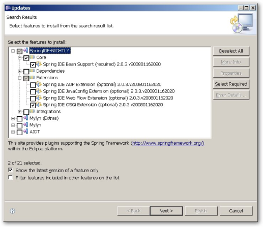
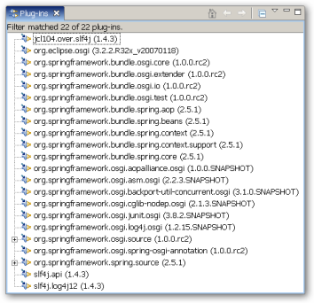
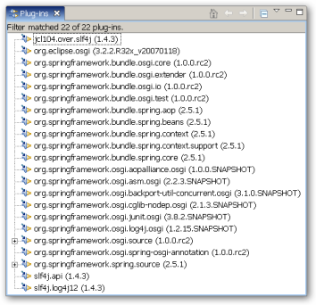

1.2.1
- Preface
- I. Introduction
- II. Reference Documentation
- 5. Bundles and Application Contexts
- 6. Packaging and Deploying Spring-based OSGi applications
- 7. The Service Registry
- 7.1. Exporting A Spring Bean As An OSGi Service
- 7.1.1. Controlling The Set Of Advertised Service Interfaces For An Exported Service
- 7.1.2. Controlling The Set Of Advertised Properties For An Exported Service
- 7.1.3. The depends-on Attribute
- 7.1.4. The context-class-loader Attribute
- 7.1.5. The ranking Attribute
- 7.1.6.
serviceElement Attributes - 7.1.7. Service Registration And Unregistration Lifecycle
- 7.2. Defining References To OSGi Services
- 7.2.1. Referencing An Individual Service
- 7.2.1.1. Controlling The Set Of Advertised Interfaces For The Imported Service
- 7.2.1.2. The
filterAttribute - 7.2.1.3. The
bean-nameAttribute - 7.2.1.4. The
cardinalityAttribute - 7.2.1.5. The depends-on Attribute
- 7.2.1.6. The context-class-loader Attribute
- 7.2.1.7.
referenceElement Attributes - 7.2.1.8.
referenceAnd OSGi Service Dynamics - 7.2.1.9. Getting A Hold Of The Managed Service Reference
- 7.2.2. Referencing A Collection Of Services
- 7.2.3. Dealing With The Dynamics Of OSGi Imported Services
- 7.2.4. Listener And Service Proxies
- 7.2.5. Accessing The Caller
BundleContext
- 7.3. Exporter/Importer Listener Best Practices
- 7.4. Service Importer Global Defaults
- 7.5. Relationship Between The Service Exporter And Service Importer
- 8. Working With Bundles
- 9. Web Support
- 10. Compendium Services
- 11. Testing OSGi based Applications
- 11.1. OSGi Mocks
- 11.2. Integration Testing
- III. Other Resources
- IV. Appendixes
Application development has seen significant changes in the last years, moving towards a simpler, more agile, POJO-based programming model in order to keep a fast pace. Dependency injection and Aspect Oriented Programming, which were once bleeding edge ideas, are used on a daily basis by most developers to manage and simplify the complexity of their applications.
However, in terms of deployment, things have remained mainly unchanged. Even though code bases are divided into modules, whether logical, conceptual or physical, at runtime they are seen as one monolithic application in which, making a change (be it large or small), requires a restart. OSGi aims to change this by allowing applications to be divided into modules that can have different life cycles, dependencies and still exist as a whole.
Spring Dynamic Modules focuses on integrating Spring Framework powerful, non-invasive programming model and concepts with the dynamics and modularity of OSGi platform. It allows transparent exporting and importing of OSGi services, life cycle management and control.
While every effort has been made to ensure that this documentation is comprehensive and there are no errors, nevertheless some topics might require more explanation and some typos might have crept in. If you do spot any mistakes or even more serious errors and you can spare a few cycles during lunch, please do bring the error to the attention of the Spring Dynamic Modules team by raising an issue. Thank you.
This document is the reference guide for Spring Dynamic Modules. It defines Spring Dynamic Modules concepts and semantics, the syntax for the OSGi Service Platform based namespaces, the Dynamic Modules extender bundle and the OSGi manifest header entries defined by Dynamic Modules. For a tutorial introduction to building OSGi-based applications with Spring Dynamic Modules see our online page.
OSGi developers looking for an introduction to Spring should review the introductory articles on the springframework.org site.
Note: OSGi is a trademark of the OSGi Alliance. Project name is pending final approval from the Alliance.
Note: Please see the known issues page for Spring Dynamic Modules release.
The Spring Framework is the leading full-stack Java/JEE application framework. It provides a lightweight container and a non-invasive programming model enabled by the use of dependency injection, AOP, and portable service abstractions. The OSGi Service Platform offers a dynamic application execution environment in which modules (bundles) can be installed, updated, or removed on the fly. It also has excellent support for modularity and versioning.
Spring Dynamic Modules makes it easy to write Spring applications that can be deployed in an OSGi execution environment, and that can take advantage of the services offered by the OSGi framework. Spring's OSGi support also makes development of OSGi applications simpler and more productive by building on the ease-of-use and power of the Spring Framework. For enterprise applications, the combination of Spring Dynamic Modules and the OSGi platform provides:
Better separation of application logic into modules, with runtime enforcement of module boundaries
The ability to deploy multiple versions of a module (or library) concurrently
The ability to dynamically discover and use services provided by other modules in the system
The ability to dynamically install, update and uninstall modules in a running system
Use of the Spring Framework to instantiate, configure, assemble, and decorate components within and across modules.
A simple and familiar programming model for enterprise developers to exploit the features of the OSGi platform.
We believe that the combination of OSGi and Spring offers a comprehensive model for building enterprise applications.
Spring Dynamic Modules 1.0 supports JDK level 1.4 and above
and OSGi
R4 and above. Bundles deployed for
use with Spring Dynamic Modules should specify
"Bundle-ManifestVersion: 2" in their manifest (OSGi R4).
We test against Equinox 3.2.x, Felix 1.0.3+, and Knopflerfish 2.1.x as part of our
continuous integration process.
Learning a new framework is not always straight forward. In this section, we (the Spring DM team) tried to provide, what we think is, an easy to follow guide for starting with Spring Dynamic Modules. Of course, feel free to create your own learning 'path' as you see fit and, if possible, please report back any improvements to the documentation that can help others.
As explained in Chapter 1, Why Spring Dynamic Modules?, Spring DM provides integration between Spring framework and OSGi. Thus, it is important to become acquainted with both of these frameworks (libraries or environments depending on how you want to name them). Throughout the Spring DM documentation, each section provides links to resources relevant however, it is best to become familiar with these topics beforehand.
Spring DM uses heavily Spring framework's core functionalty, such as the IoC container, resource abstract or AOP infrastructure. While it is not important to know the Spring APIs, understanding the concepts behind them is. At a minimum, the idea behind IoC should be familiar. These being said, the more knowledge one has about the Spring, the faster she will pick Spring Dynamic Modules. Besides the very comprehensive (and sometimes disarming) documentation that explains in detail the Spring Framework, there are a lot of articles, blog entries and books on the matter - take a look at the Spring framework home page for more information. In general, this should be the starting point for OSGi (or Eclipse plugin) developers wanting to try Spring DM.
Java developers, new to OSGi, can start by reading the OSGi Alliance introduction, the OSGi specifications or one of the articles/blogs available on the internet (such as the SpringSource blogs). Additionally, the Spring DM home page hosts various links to useful materials.
Once one is familiar with the concepts behind Spring and OSGi, she can start reading the Spring DM reference documentation (this document) and take the Spring DM samples for a spin. The samples are available either in the .zip distribution or from the Spring DM repository. The samples are a convenient way to get started quickly with Spring DM as they show various features of Spring DM and help one get pass the initial struggles with OSGi. However, they are not meant as the definitive guide in using OSGi rather, they aim to be a launching pad for "newbies" trying out OSGi in Spring.
The current distribution contains:
Simple Service Sample
A simple example that illustrates OSGi service publication and consumption through Spring DM. This is a good starting point for users learning the basics.
Weather Sample
A demo that shows more advanced features of Spring DM and OSGi. The application creates a very simple weather information services presenting some best practices in designing an application to take advantage of the modularity offered by OSGi.
Simple Web App Sample
As the name implies, this is a simple web application, containing Servlets, JSPs and JSP tags, that runs inside OSGi through Spring DM.
Web Console Sample
A more complicated sample that demos a Spring MVC annotation based, web application that runs inside OSGi through Spring DM, featuring class path scanning and various Spring taglib. Additionally, the web application interacts with the OSGi environment through the web UI.
Each project contains instructions regarding its content and startup procedure. Users are encouraged to experiment with the samples to get a better understanding of the technologies used.
If you encounter issues or you are just looking for an advice, feel free to use one of the links below:
The Spring DM forum is a message board for all Spring DM users to share information and help each other. Note that registration is needed only for posting.
Professional, from-the-source support, with guaranteed response time, is available from SpringSource, the company behind Spring Dynamic Modules and Spring.
For information on the Spring DM source code repository, nightly builds and snapshot artifacts please see the Spring DM home page.
You can help make Spring DM best serve the needs of the Spring community by interacting with developers through the Spring Community forums.
If you encounter a bug or want to suggest an improvement, please create a ticket on the Spring DM issue tracker.
To stay up to date with the latest news and announcements in the Spring eco system, subscribe to the Spring Community Portal.
While a relatively young project, each version of Spring Dynamic Modules (even minor ones) offers new functionality. This chapter is a guide to the new and improved feature and intended as a high-level, short summary. Please follow the appropriate links for more in-depth information.
Since 1.2.x, Spring Dynamic Modules is aware of secured environments by making use of dedicated privileged blocks for executing security sensitive code. Thus, Spring DM can run as a trusted library without requiring escalated permissions for its managed bundles. See Appendix B, Security Integration for more information.
1.2.x provides integration with the Configuration Admin, part of the OSGi compendium services. Chapter 10, Compendium Services provides more details on the topic.
Since 1.2.0 M2, the Spring DM bundles symbolic names have been aligned with Spring's 2.5.6+. Thus the prefix
org.springframework.bundle.osgi has been changed to org.springframework.osgi; for example
Spring DM extender symbolic name was changed from org.springframework.bundle.osgi.extender to org.springframework.osgi.extender
(notice the missing bundle word). Additionally, the documentation has been updated to reflect Spring 2.5.6+ symbolic names.
To minimize the number of repositories used and the confusion caused by OSGified vs non-OSGified artifacts especially to users using Spring dm Server,
after 1.2.0 RC1, Spring Dynamic Modules aligned as many of its dependencies as possible with SpringSource EBR.
In practice this means that Spring framework artifacts, such as spring-aop.jar can be now found as org.springframework.aop.jar;
We apologize for any inconvenience created to users relying on these naming conventions.
The biggest feature in Spring Dynamic Modules 1.1.x is the transparent support for web applications on OSGi platforms. By integrating directly with web containers (such as Apache Tomcat and Jetty), Spring DM allows WARs using Servlet, JSP and taglib technologies to be used with little or no effort at all. Please see Chapter 9, Web Support for details.
Additionally, with 1.1.x it is possible to run Spring-MVC applications inside OSGi environments. See Section 9.7, “Spring-MVC Integration” for more information.
1.1.x adds support for classpath: and classpath*: prefixes to the OSGi Resource
abstraction. This allows the discovery of classpath resources (such as Spring's
component scanning) to
work out-of-the-box across multiple bundles on the supported OSGi platforms. See Section 5.4, “The Resource Abstraction” for more information.
1.1.x makes it easy to change the default configuration for the various extenders used by Spring DM. By using fragments, users can customize the way application contexts are started, the web container used for web deployment or the thread-pool for running Spring applications. Additionally, it is possible to receive events regarding the OSGi Spring application contexts lifecycle. Section 5.1, “The Spring Dynamic Modules Extender bundle” lists the available options and explains them in detail.
This part of the reference documentation explains the core functionality offered by Spring Dynamic Modules.
Chapter 5, Bundles and Application Contexts describes the relationship between an OSGi Bundle and a Spring Application Context, and introduces the Spring Extender Bundle support for instantiating application contexts automatically.
Chapter 6, Packaging and Deploying Spring-based OSGi applications describes how to deploy the Spring Framework jar files in an OSGi environment, and how to reference external APIs from your application bundles should you need to do so. This chapter also explains some of the issues to be aware of when using existing enterprise libraries not designed for OSGi in an OSGi environment.
Chapter 7, The Service Registry describes how to export Spring beans as services in the OSGi service registry, and how to inject references to OSGi services into beans. This chapter also defines how the dynamic life-cycle of OSGi services and bundles is supported.
Chapter 8, Working With Bundles describes how to declare a bean that represents an OSGi bundle, including support for installing new bundles into the OSGi platform.
Chapter 9, Web Support explains how to run web applications inside an OSGi environment using Spring DM.
Chapter 10, Compendium Services describes the support provided for the OSGi Compendium Services, specifically the Configuration Admin service.
Chapter 11, Testing OSGi based Applications explains the integration testing support provided by Spring Dynamic Modules. This support enables you to write simple JUnit integration tests that can start up an OSGi environment, install the bundles needed for the integration test, execute the test case(s) inside of OSGi, and return the results to the runner. This makes it easy to integrate OSGi integration testing into any environment that can work with JUnit.
The unit of deployment (and modularity) in OSGi is the bundle (see section 3.2 of the OSGi Service Platform Core Specification). A bundle known to the OSGi runtime is in one of three steady states: installed, resolved, or active. Bundles may export services (objects) to the OSGi service registry, and by so doing make these services available for other bundles to discover and to use. Bundles may also export Java packages, enabling other bundles to import the exported types.
In Spring the primary unit of modularity is an application context, which contains some number of beans (objects managed by the Spring application context). Application contexts can be configured in a hierarchy such that a child application context can see beans defined in a parent, but not vice-versa. The Spring concepts of exporters and factory beans are used to export references to beans to clients outside of the application context, and to inject references to services that are defined outside of the application context.
There is a natural affinity between an OSGi bundle and a Spring application context. Using Spring Dynamic Modules, an active bundle may contain a Spring application context, responsible for the instantiation, configuration, assembly, and decoration of the objects (beans) within the bundle. Some of these beans may optionally be exported as OSGi services and thus made available to other bundles, beans within the bundle may also be transparently injected with references to OSGi services.
Spring Dynamic Modules provides an OSGi bundle
org.springframework.osgi.extender. This
bundle is responsible for instantiating the Spring application contexts
for your application bundles. It serves the same purpose as the ContextLoaderListener
does for Spring web applications. Once the extender bundle is installed
and started it looks for any existing Spring-powered bundles that are
already in the ACTIVE state and creates application contexts on their
behalf. In addition, it listens for bundle starting events and
automatically creates an application context for any Spring-powered
bundle that is subsequently started. Section 6.1, “Bundle Format And Manifest Headers”
describes what the extender recognizes as a "Spring-powered bundle" while
Section 6.2, “Extender Configuration Options” how the extender can be configured.
The extender bundle creates applications contexts asynchronously, on a different thread then the one starting the bundle. This behaviour ensures that starting an OSGi Service Platform is fast and that bundles with service inter-dependencies do not cause deadlock (waiting for each other) on startup, as pictured below:

The extender considers only bundles successfully started, that is, bundles in ACTIVE state; bundles in other states are ignored. Therefore a Spring-powered bundle will have its application context created after it has been started. It is possible to force synchronous/serialized creation of application contexts for started bundles, on a bundle-by-bundle basis. See Section 6.1, “Bundle Format And Manifest Headers” for information on how to specify this behaviour.
If application context creation fails for any reason then the failure cause is logged. The bundle remains in the ACTIVE state. There will be no services exported to the registry from the application context in this scenario.
If an application context declares mandatory dependencies on the availability of certain OSGi services (see Chapter 7, The Service Registry) then creation of the application context is blocked until all mandatory dependencies can be satisfied through matching services available in the OSGi service registry. Since a service may come and go at any moment in an OSGi environment, this behaviour only guarantees that all mandatory services were available at the moment creation of the application context began. One or more services may subsequently become unavailable again during the process of application context creation. Chapter 7, The Service Registry describes what happens when a mandatory service reference becomes unsatisfied. In practice, for most enterprise applications built using Spring Dynamic Modules services, the set of available services and bundles will reach a steady state once the platform and its installed bundles are all started. In such a world the behaviour of waiting for mandatory dependencies simply ensures that bundles A and B, where bundle A depends on services exported by bundle B, may be started in any order.
A timeout applies to the wait for mandatory dependencies to be
satisfied. By default the timeout is set to 5 minutes, but this value
can be configured using the timeout directive. See
Section 6.1, “Bundle Format And Manifest Headers” for details.
It is possible to change the application context creation semantics so that application context creation fails if all mandatory services are not immediately available upon startup (see the aformentioned section for more information). However, regardless of the configuration chosen, the failure of the application context will not change the bundle state.
Once the application context creation for a bundle has
completed, the application context object is automatically exported as
a service available through the OSGi Service Registry. The context is
published under the interface
org.springframework.context.ApplicationContext (and
also all of the visible super-interfaces and types implemented by the
context). The published service has a service property named
org.springframework.context.service.name whose
value is set to the bundle symbolic name of the bundle hosting the
application context. It is possible to prevent publication of the
application context as a service using a directive in the bundle's
manifest. See Section 6.1, “Bundle Format And Manifest Headers” for details.
Note: the application context is published as a service
primarily to facilitate testing, administration, and management.
Accessing this context object at runtime and invoking
getBean() or similar operations is discouraged. The
preferred way to access a bean defined in another application context
is to export that bean as an OSGi service from the defining context,
and then to import a reference to that service in the context that
needs access to the service. Going via the service registry in this
way ensures that a bean only sees services with compatible versions of
service types, and that OSGi platform dynamics are respected.
OSGi is a dynamic platform: bundles may be installed, started, updated, stopped, and uninstalled at any time during the running of the framework.
When an active bundle is stopped, any services it exported during its lifetime are automatically unregistered and the bundle returns to the resolved state. A stopped bundle should release any resources it has acquired and terminate any threads. Packages exported by a stopped bundle continue to be available to other bundles.
A bundle in the resolved state may be uninstalled: packages that were exported by an uninstalled bundle continue to be available to bundles that imported them (but not to newly installed bundles).A bundle in the resolved state may also be updated. The update process migrates from one version of a bundle to another version of the same bundle.
Finally of course, a resolved bundle can be started, which transitions it to the active state.
The diagram below represents the bundle states and its transitions:

The OSGi PackageAdmin
refreshPackages operation refreshes packages across
the whole OSGi framework or a given subset of installed bundles. During
the refresh, an application context in an affected bundle will be
stopped and restarted. After a refreshPackages
operation, packages exported by older versions of updated bundles, or
packages exported by uninstalled bundles, are no longer available.
Consult the OSGi specifications for full details.
When a Spring-powered bundle is stopped, the application context
created for it is automatically destroyed. All services exported by the
bundle will be unregistered (removed from the service registry) and the
normal application context tear-down life-cycle is observed
(org.springframework.beans.factory.DisposableBean implementors
and destroy-method
callbacks are invoked on beans in the context).
If a Spring-powered bundle that has been stopped is subsequently re-started, a new application context will be created for it.
The Spring Framework defines a resource abstraction for loading
resources within an application context (see Spring's
resource abstraction). All resource loading is done through the
org.springframework.core.io.ResourceLoader associated with the application
context. The org.springframework.core.io.ResourceLoader is also
available to beans wishing to load resources programmatically. Resource paths with
explicit prefixes - such as classpath: - are treated uniformly
across all application context types (for example, web application
contexts and classpath-based application contexts). Relative resource
paths are interpreted differently based on the type of application
context being created. This enables easy integration testing outside
the ultimate deployment environment.
OSGi 4.0.x specification defines three different spaces from which a resource can be loaded. Spring DM supports all of them through its dedicated OSGi-specific application context and dedicated prefixes:
Table 5.1. OSGi resource search strategies
| OSGi Search Strategy | Prefix | Explanation |
|---|---|---|
| Class Space | classpath: | Searches the bundle classloader (the bundle, all imported packages and required bundles). Forces the bundle to be resolved.
This method has similar semantics to
Bundle#getResource(String) |
| Class Space | classpath*: | Searches the bundle classloader (the bundle and all imported packages and required bundles). Forces the bundle to be resolved.
This method has similar semantics to
Bundle#getResources(String)
|
| JAR File (or JarSpace) | osgibundlejar: | Searches only the bundle jar. Provides low-level access without requiring the bundle to be resolved. |
| Bundle Space | osgibundle: | Searches the bundle jar and its attached fragments (if there are any). Does not create a class loader or force the bundle to be resolved. |
Please consult section 4.3.12 of the OSGi specification for an in depth explanation of the differences between them.
![[Note]](images/admons/note.png) | Note |
|---|---|
If no prefix is specified, the bundle space (osgibundle:) will be used. |
| Note |
|---|---|
Due to the OSGi dynamic nature, a bundle classpath can change during its life time (for example when dynamic imports are used). This might cause different
classpath Resources to be returned when doing pattern matching based on the running environment or target platform. |
All of the regular Spring resource prefixes such as file: and
http: are also supported, as are the pattern matching wildcards.
Resources loaded using such prefixes may come from any location, they
are not restricted to being defined within the resource-loading bundle
or its attached fragments.
OSGi platforms may define their own unique prefixes for accessing
bundle contents. For example, Equinox defines the bundleresource: and
bundlentry: prefixes. These platform specific prefixes may also be
used with Spring OSGi, at the cost, of course, of tying yourself to a
particular OSGi implementation.
In general there is no need to depend on any OSGi APIs when using
the Spring Dynamic Modules support. If you do need
access to the OSGi BundleContext object for your
bundle, then Spring makes this easy to do.
The OSGi application context created by the Spring extender will
automatically contain a bean of type BundleContext
and with name bundleContext. You can inject a
reference to this bean into any bean in the application context either
by-name or by-type. In addition, Spring Dynamic Modules defines the
interface
org.springframework.osgi.context.BundleContextAware:
public interface BundleContextAware { public void setBundleContext(BundleContext context); }
Any bean implementing this interface will be injected with a
reference to the bundle context when it is configured by Spring. If you
wish to use this facility within a bundle, remember to import the
package org.springframework.osgi.context in your
bundle manifest.
The application context is bound to the bundle in which it lives. Thus, if the declaring bundle is being shutdown, the application context will be destroyed as well, all exported services being unregistered and all service imported dispose of.
As opposed to the application creation, the application context is destroyed in a synchronized manner, on the same thread that stops the bundle. This is required since once stopped, a bundle can not longer be used (even for class loading) preventing the application context shutdown from executing correctly.

Note that a bundle can be closed individually or as part of a bigger event such as shutting down the entire OSGi platform. In this case or when the extender bundle is being closed down, the application contexts will be closed in a managed manner, based on the service dependencies between them. Please see the next section for more details.
If the extender bundle is stopped, then all the application contexts created by the extender will be destroyed. Application contexts are shutdown in the following order:
Application contexts that do not export any services, or that export services that are not currently referenced, are shutdown in reverse order of bundle id. (Most recently installed bundles have their application contexts shutdown first).
Shutting down the application contexts in step (1) may have released references these contexts were holding such that there are now additional application contexts that can be shutdown. If so, repeat step 1 again.
If there are no more active application contexts, we have finished. If there are active application contexts then there must be a cyclic dependency of references. The circle is broken by determining the highest ranking service exported by each context: the bundle with the lowest ranking service in this set (or in the event of a tie, the highest service id), is shut down. Repeat from step (1).
A traditional Spring application uses either a single application context, or a parent context containing service layer, data layer, and domain objects with a child context containing web layer components. The application context may well be formed by aggregating the contents of multiple configuration files.
When deploying an application to OSGi the more natural structure is to package the application as a set of peer bundles (application contexts) interacting via the OSGi service registry. Independent subsystems should be packaged as independent bundles or sets of bundles (vertical partitioning). A subsystem may be package in a single bundle, or divided into several bundles partitioned by layer (horizontal partitioning). A straightforward web application may for example be divided into four modules (bundles): a web bundle, service layer bundle, data layer bundle, and domain model bundle. Such an application would look like this:
In this example the data layer bundle yields a data layer application context that contains a number of internal components (beans). Two of those beans are made publicly available outside of the application context by publishing them as services in the OSGi service registry.
The service layer bundle yields a service layer application context that contains a number of internal components (beans). Some of those components depend on data layer services, and import those services from the OSGi service registry. Two of the service layer components are made externally available as services in the OSGi service registry.
The web component bundle yields a web application context that contains a number of internal components (beans). Some of those components depend on application services, and import those services from the OSGi service registry. Since the domain model bundle contributes only domain model types, but does not need to create any components of its own, it has no associated application context.
Each application module should be packaged as an OSGi bundle. A
bundle is essentially a jar file with a
META-INF/MANIFEST.MF file containing a series of
headers recognized by the OSGi Service Platform. See the OSGi Service
Platform Core Specification section 3.2 for details. Some OSGi
implementations may support exploded jar files, but the format remains
the same.
The Spring extender recognizes a bundle as "Spring-powered" and will create an associated application context when the bundle is started and one or both of the following conditions is true:
The bundle path contains a folder
META-INF/springwith one or more files in that folder with a '.xml' extension.META-INF/MANIFEST.MFcontains a manifest headerSpring-Context.
In addition, if the optional
SpringExtender-Version header is declared in the
bundle manifest, then the extender will only recognize bundles where the
specified version constraints are satisfied by the version of the
extender bundle (Bundle-Version). The value of the
SpringExtender-Version header must follow the syntax
for a version range as specified in section 3.2.5 of the OSGi Service
Platform Core Specification.
In the absence of the Spring-Context header the
extender expects every ".xml" file in the
META-INF/spring folder to be a valid Spring
configuration file, and all directives (see below) take on their default
values.
An application context is constructed from this set of files. A suggested practice is to split the application context configuration into at least two files, named by convention modulename-context.xml and modulename-osgi-context.xml. The modulename-context.xml file contains regular bean definitions independent of any knowledge of OSGi. The modulename-osgi-context.xml file contains the bean definitions for importing and exporting OSGi services. It may (but is not required to) use the Spring Dynamic Modules OSGi schema as the top-level namespace instead of the Spring 'beans' namespace.
The Spring-Context manifest header may be used
to specify an alternate set of configuration files. The resource paths
are treated as relative resource paths and resolve to entries defined in
the bundle and the set of attached fragments.
When the
Spring-Context header defines at least one
configuration file location, any files in
META-INF/spring are ignored unless directly
referenced from the Spring-Context header.
The syntax for the Spring-Context header value
is:
Spring-Context-Value ::= context ( ',' context ) *
context ::= path ( ';' path ) * (';' directive) *
This syntax is consistent with the OSGi Service Platform common header syntax defined in section 3.2.3 of the OSGi Service Platform Core Specification.
For example, the manifest entry:
Spring-Context: config/account-data-context.xml, config/account-security-context.xml
will cause an application context to be instantiated using the
configuration found in the files
account-data-context.xml and
account-security-context.xml in the bundle jar
file.
A number of directives are available for use with the
Spring-Context header. These directives are:
create-asynchronously (false|true): controls whether the application context is created asynchronously (the default), or synchronously.
For example:
Spring-Context: *;create-asynchronously:=false
Creates an application context synchronously, using all of the "*.xml" files contained in the
META-INF/springfolder.Spring-Context: config/account-data-context.xml;create-asynchrously:=false
Creates an application context synchronously using the
config/account-data-context.xmlconfiguration file. Care must be taken when specifying synchronous context creation as the application context will be created on the OSGi event thread, blocking further event delivery until the context is fully initialized. If an error occurs during the synchronous creation of the application context then aFrameworkEvent.ERRORevent is raised. The bundle will still proceed to theACTIVEstate.wait-for-dependencies (true|false): controls whether or not application context creation should wait for any mandatory service dependencies to be satisfied before proceeding (the default), or proceed immediately without waiting if dependencies are not satisfied upon startup.
For example:
Spring-Context: config/osgi-*.xml;wait-for-dependencies:=false
Creates an application context using all the files matching "osgi-*.xml" in the config directory. Context creation will begin immediately even if dependencies are not satisfied. This essentially means that mandatory service references are treated as though they were optional - clients will be injected with a service object that may not be backed by an actual service in the registry initially. See Section 7.2.1.8, “
referenceAnd OSGi Service Dynamics” for more details.timeout (300): the time to wait (in seconds) for mandatory dependencies to be satisfied before giving up and failing application context creation. This setting is ignored if
wait-for-dependencies:=falseis specified. The default is 5 minutes (300 seconds).For example:
Spring-Context: *;timeout:=60
Creates an application context that waits up to 1 minute (60 seconds) for its mandatory dependencies to appear.
publish-context (true|false): controls whether or not the application context object itself should be published in the OSGi service registry. The default is to publish the context.
For example:
Spring-Context: *;publish-context:=false
If there is no Spring-Context manifest entry, or no value is specified for a given directive in that entry, then the directive takes on its default value.
Aside from bundle-specific configurations, Spring DM allows the core extender generic behaviour be configured. This is useful when
embedding Spring DM inside a managed environment or when a bundles-wide functionality is desired. To allow for extensible configuration,
the extender relies on OSGi fragments to override its defaults. The extender looks for all XML files
under META-INF/spring/extender folder in its bundle space and assembled them into an application context
(of type OsgiBundleXmlApplicationContext)
that is used internally as its configuration. To override a default setting of the extender, look up the appropriate bean
name from the table below, define it in a suitable manner and then attach it as a fragment to the
spring-osgi-extender.jar, using:
Fragment-Host: org.springframework.osgi.extender
The following beans are currently recognized by the extender:
Table 6.1. Extender Configuration Options
| Bean Name | Type | Role | Default Behaviour/Value |
|---|---|---|---|
taskExecutor | TaskExecutor
[a] | Creates and runs the Spring application contexts associated with each bundle. The task executor is responsible for managing its own pool of threads used by the application contexts | SimpleAsyncTaskExecutor is used by default which means a new thread will be created for each application contexts. While this
is suitable for testing and development, we strongly recommend to use a thread pool
in a production environment |
shutdownTaskExecutor | TaskExecutor
[b] | Destroys managed Spring application contexts associated with each bundle. The task executor is responsible for managing its own pool of threads used by the application contexts | TimerTaskExecutor is used by default which means all application context will be destroyed in a serialized manner (which is
desired). Since the shutdown order normally matters, it is recommended to keep the default implementation or, for managed environments, to use a thread-pool
that executes only one task at a time (so that contexts are stopped in the given order). |
extenderProperties | java.util.Properties | Defines simple properties such as the maximum time for contexts to gracefully close | See the defaults below |
osgiApplicationEventMulticaster | ApplicationEventMulticaster
[c]
|
ApplicationEventMultiCaster used for propagating Spring DM events
to third parties.
| An instance of
SimpleApplicationEventMulticaster is used.
See AbstractApplicationContext
javadoc
for more information regarding available beans in an application context. |
applicationContextCreator | OsgiApplicationContextCreator
[d]
| Allows customization of the application context created by the extender. This includes changing the application context class type or additional processing (see below). | The Extender default behaviour applies. |
| (irrelevant) | OsgiBeanFactoryPostProcessor
[d]
| Similar to Spring's BeanFactoryPostProcessor interface, beans of type
OsgiBeanFactoryPostProcessor are automatically detected and applied to all contexts created by the
extender (whether user-defined or not). This type of post processor
is useful as it allows customization of the bean factory such as adding/removing/changing existing bean definitions or adding new bean
instances. | The Extender default behaviour applies. |
osgiApplicationContextListener | OsgiBundleApplicationContextListener
[e]
| Application context event listener registered automatically by the extender. | Default implementation provides logging of the managed application contexts lifecycle. |
[a] org.springframework.core.task[b] org.springframework.core.task[c] org.springframework.context.event[d] org.springframework.osgi.extender package[e] org.springframework.osgi.context.event package | |||
From the extenderProperties bean, the following properties are recognized:
Table 6.2. Available extenderProperties
| Name | Type | Description | Default Value |
|---|---|---|---|
shutdown.wait.time | java.lang.Long | The amount of time the extender will wait for each application context to shutdown gracefully. Expressed in milliseconds. | 10000 ms (10 s) |
process.annotations | java.lang.Boolean | Flag indicating whether or not, the extender will process Spring DM annotations. Note that this can be enabled in each process bundle by adding the appropriate bean post processor. See Section A.1, “Annotation-Based Injection” for more information. | false |
dependencies.wait.time | java.lang.Long | The amount of time the newly created application contexts will wait for their mandatory service dependencies during startup. Expressed in milliseconds. This settings is used only if the context owning bundle manifest does not define a value. | 300000 ms (300 s or 5 min) |
| Note |
|---|---|
| Since an application context is used, the full power of the Spring IoC container can be used for creating the extender configuration beans |
There are cases when the failure or succesful startup of an application context needs to be acknowledged for logging purposes (for example).
For these cases, Spring DM offers a dedicated package org.springframework.osgi.context.event which defines the events that
OSGi application contexts can send during their lifecycle. At the moment, the following events are available:
Table 6.3. Spring DM build-in events
| Event | Explanation |
|---|---|
OsgiBundleContextRefreshedEvent | Published when an OSGi application context has been succesfully initialized or refreshed (e.g. using the
refresh() method on the ConfigurableApplicationContext interface).
There are no guarantees on how many times this event might be received during the lifecycle of an application context - this is
left up to the used implementation. |
OsgiBundleContextFailedEvent | Published when an OSGi application context is closed due to a failure. This event can appear any time during the lifecycle of an application context - before, during or after refresh. Usually the cause indicates an error in the configuration - syntax typo, incorrect wiring, missing bean and so forth. |
OsgiBundleContextClosedEvent | Published when an OSGi application context is closed after a successful refresh (normally issued a Spring bundle is being stopped). |
Parties interested in receiving these events should implement OsgiBundleApplicationContextListener and
then publish it as an OSGi service. The Spring DM extender will automatically detect the listener and will send the events to it. By taking advantage
of the OSGi service registry, the extender decouples the received from the event publisher and moreover, makes the registration/unregistration process
easier. For example, there is nothing special a client should do to unregister the listener - simply stopping the bundle will automatically
unregister all its published services (including the listener), an event which will detected by the extender which will remove the listener.
Of course, it is also possible for the client to unregister the listener manually during a bundle lifecycle.
| Note |
|---|---|
| The Spring DM events semantics are slightly different then Spring's. The OSGi events are not sent to beans inside the causing application context but to other parties (possible beans in other application contexts) interested in monitoring its behaviour. |
The Spring Dynamic Modules project provides a number of bundle artifacts that must be installed in your OSGi platform in order for the Spring extender to function correctly:
The extender bundle itself,
org.springframework.osgi.extenderThe core implementation bundle for the Spring Dynamic Modules support,
org.springframework.osgi.coreThe Spring Dynamic Modules I/O support library bundle,
org.springframework.osgi.io
In addition the Spring Framework provides a number of bundles that are required to be installed. As of release 2.5 of the Spring Framework, the Spring jars included in the Spring distribution are valid OSGi bundles and can be installed directly into an OSGi platform. The minimum required set of bundles is:
spring-core.jar (bundle symbolic name
org.springframework.core)spring-context.jar (bundle symbolic name
org.springframework.context)spring-beans.jar (bundle symbolic name
org.springframework.beans)spring-aop.jar (bundle symbolic name
org.springframework.aop)
In additional the following supporting library bundles are required. OSGi-ready versions of these libraries are shipped with the Spring Dynamic Modules distribution.
aopalliance
backport-util (when running on JDK 1.4)
cglib-nodep (when proxying classes rather then interfaces, needed in most cases)
commons-logging API (SLF4J version highly recommended:
SLF4J API (com.springsource.sfl4j.api.jar)
SLF4J Implementation Bridge (such as Log4j - com.springsource.sfl4j.log4j.jar)
SLF4J commons logging adapter (com.springsource.sfl4j.org.apache.commons.logging.jar)
)
logging implementation suitable for commons-logging (such as log4j)
Spring 2.0 introduced (among other things) easier XML configuration and extensible XML authoring. The latter gives the ability of creating custom schemas that are discovered automatically (in non-OSGi environment) by the Spring XML infrastructure by including them in the classpath. Spring DM is aware of this process and supports it in OSGi environments so that custom schemas are available to bundles that use them without any extra code or manifest declaration.
All bundles deployed in the OSGi space (whether they are Spring-powered or not) are scanned by Spring DM for
custom Spring namespace declaration (by checking the bundle space forMETA-INF/spring.handlers and
META-INF/spring.schemas). If these are found, Spring DM will make the schemas and the namespaces available through an OSGi
service that will be automatically used by Spring-powered bundles. This mean that if you deploy a bundle that uses a custom schema, all you have to do
is deploy the library that provides the namespace parser and the schema.
Bundles that embedded inside their classpath libraries that provide custom schemas will use these over those available in the OSGi space. However,
the namespaces of the embedded libraries will not shared with other bundles, that is, they will not be seen by any other bundle.
In short, with using Spring DM, custom Spring namespaces are supported transparently without any additional work. Embedded namespace providers will have priority but will not be shared, as opposed to providers deployed as bundles which will be seen (and used) by others.
Refer to the OSGi Service Platform for details of the
Import-Package and Export-Package
manifest headers. Your bundle will need an
Import-Package entry for every external package that
the bundle depends on. If your bundle provides types that other bundles
need access to, you will need Export-Package entries
for every package that should be available from outside of the
bundle.
Many enterprise application libraries assume that all of the types and resources that comprise the application are accessible through the context class loader. While most developers do not use the context class loader, the loader is used heavily by application servers, containers or applications that are multi-threaded.
In OSGi R4, the set of types and resources available through the context class loader is undefined. This means that the OSGi platform does not make a guarantee of the thread context class loader value or in other words, it does not manage it.
Thus code (for example libraries) that performs manual class loading or that generates new classes dynamically can cause problems when executed inside an OSGi environment.
Spring Dynamic Modules guarantees that during the creation of an application context on behalf of a given bundle, all of the types and resources on the bundle's classpath are accessible via the context class loader. Spring Dynamic Modules also allows you to control what is accessible through the context class loader when invoking external services and when servicing requests on exported services. See Chapter 7, The Service Registry for details on this.
Work is underway in the OSGi R5 timeframe to provide standardized
support for dealing with generated classes and implicit class path
dependencies introduced by third-party libraries. In the interim you may
need to rely on workarounds such as the
DynamicImport-Package manifest header, or the
facilities provided by specific OSGi implementations such as Equinox's
buddy mechanism. The Spring Dynamic Modules documentation contains more
details on known issues with common enterprise libraries and the
workarounds.
Your chosen OSGi platform implementation should be able to provide
you with a good deal of information about the current status of the OSGi
environment. For example, starting Equinox with the
-console argument provides a command-line console
through which you can determine which bundles are installed and their
states, the packages and services exported by bundles, find out why a
bundle has failed to resolve, and drive bundles through the
lifecycle.
In addition, Spring itself and the Spring Dynamic Modules bundles
contain extensive logging instrumentation that can help you diagnose
problems. The recommended approach is to deploy the Simple Logging
Facade for Java (slf4j)
slf4j-api.jar and slf4j-log4j13.jar bundles (the jar files distributed
by the project are valid OSGi bundles). Then you simply need to create a
log4j.properties file in the root of your bundle
classpath.
Note that Spring Dynamic Modules uses commons-logging API internally which means that its logging implementation is fully pluggable. Please see the FAQ and Resources pages for more information on other logging libraries besides log4j.
The OSGi service registry enables a bundle to publish objects to a shared registry, advertised via a given set of Java interfaces. Published services also have service properties associated with them in the registry.
Spring Dynamic Modules provides an osgi namespace for Spring (see
Appendix H, Spring Dynamic Modules Schema) that can be used to export
Spring beans as OSGi services, and
to define references to services obtained via the service registry. The
namespace elements may be used nested inside another top-level namespace
(typically the Spring beans namespace), or within the top-level
osgi element.
The following example shows the use of the osgi
namespace within the familiar Spring beans element:
<?xml version="1.0" encoding="UTF-8"?> <beans xmlns="http://www.springframework.org/schema/beans"xmlns:xsi="http://www.w3.org/2001/XMLSchema-instance" xmlns:osgi="http://www.springframework.org/schema/osgi"
xsi:schemaLocation="http://www.springframework.org/schema/beans http://www.springframework.org/schema/beans/spring-beans.xsd
http://www.springframework.org/schema/osgi http://www.springframework.org/schema/osgi/spring-osgi.xsd"> <osgi:service id="simpleServiceOsgi" ref="simpleService"
interface="org.xyz.MyService" /> </beans>
| Use Spring Framework |
| Import Spring Dynamic Modules schema and associate a prefix with its namespace ( |
| Make sure to import Spring beans schema version 2.5. |
| Use Spring Dynamic Modules elements using the declared namespace prefix (in this example |
Using the OSGi namespace as a top-level namespace, the same service would be declared as follows:
<?xml version="1.0" encoding="UTF-8"?> <beans:beansinterface="org.xyz.MyService" /> </beans:beans>
|
|
| Use Spring Dynamic Modules schema as the default namespace. |
| Import Spring Framework |
| Make sure to import Spring beans schema version 2.5. |
| Use Spring Dynamic Modules elements without any prefix. |
Using the OSGi namespace as a top-level namespace is particularly convenient when following the recommendation of Section 6.1, “Bundle Format And Manifest Headers” to use a dedicated configuration file for all OSGi-related declarations.
The service element is used to define a bean
representing an exported OSGi service. At a minimum you must specify the
bean to be exported, and the service interface that
the service advertises.
For example, the declaration
<service ref="beanToPublish" interface="com.xyz.MessageService"/>
exports the bean with name beanToPublish with
interface com.xyz.MessageService. The published
service will have a service property with the name
org.springframework.osgi.bean.name set to the name of
the target bean being registered (beanToPublish in
this case).
The bean defined by the
service element is of type
org.osgi.framework.ServiceRegistration and is the
ServiceRegistration object resulting from registering
the exported bean with the OSGi service registry. By giving this bean an
id you can inject a reference to the
ServiceRegistration object into other beans if
needed. For example:
<service id="myServiceRegistration" ref="beanToPublish" interface="com.xyz.MessageService"/>
As an alternative to exporting a named bean, the bean to be
exported to the service registry may be defined as an anonymous inner
bean of the service element. Typically the top-level namespace would be
the beans namespace when using this style:
<osgi:service interface="com.xyz.MessageService"> <bean class="SomeClass"> ... </bean> </osgi:service>
If the bean to be exported implements the
org.osgi.framework.ServiceFactory interface then the
ServiceFactory contract is honored as per section 5.6
of the OSGi Service Platform Core Specification. As an alternative to
implementing this OSGi API, Spring Dynamic Modules introduces a new bean
scope, the bundle scope. When a bean with bundle
scope is exported as an OSGi service then one instance of the bean will
be created for each unique client (service importer) bundle that
obtains a reference to it through the OSGi service registry. When a
service importing bundle is stopped, the bean instance associated with
it is disposed. To declare a bean with bundle scope
simply use the scope attribute of the
bean element:
<osgi:service ref="beanToBeExported" interface="com.xyz.MessageService"/> <bean id="beanToBeExported" scope="bundle" class="com.xyz.MessageServiceImpl"/>
The OSGi Service Platform Core Specification defines the term service interface to represent the specification of a service's public methods. Typically this will be a Java interface, but the specification also supports registering service objects under a class name, so the phrase service interface can be interpreted as referring to either an interface or a class.
There are several options for specifying the service
interface(s) under which the exported service is registered. The
simplest mechanism, shown above, is to use the
interface attribute to specify a fully-qualified
interface name. To register a service under multiple interfaces the
nested interfaces element can be used in place of
the interface attribute.
<osgi:service ref="beanToBeExported"> <osgi:interfaces> <value>com.xyz.MessageService</value> <value>com.xyz.MarkerInterface</value> </osgi:interfaces> </osgi:service>
It is illegal to use both interface attribute and
interfaces element at the same time - use only one of them.
Using the auto-export attribute you can avoid
the need to explicitly declare the service interfaces at all by analyzing the
object class hierarchy and its interfaces.
The auto-export attribute can have one of four
values:
disabled: the default value; no auto-detected of service interfaces is undertaken and theinterfaceattribute orinterfaceselement must be used instead.interfaces: the service will be registered using all of the Java interface types implemented by the bean to be exportedclass-hierarchy: the service will be registered using the exported bean's implementation type and super-typesall-classes: the service will be registered using the exported bean's implementation type and super-types plus all interfaces implemented by the bean.
auto-export and interface(s) option are not exclusive; both
can be used at the same time for fine grained control over the advertised interfaces if there is such
a need. However, the former option should be enough for most cases.
For example, to automatically register a bean under all of the interfaces that it supports you would declare:
<service ref="beanToBeExported" auto-export="interfaces"/>
Given the interface hierarchy:
public interface SuperInterface {} public interface SubInterface extends SuperInterface {}
then a service registered as supporting the
SubInterface interface is not
considered a match in OSGi when a lookup is done for services
supporting the SuperInterface interface. For this
reason it is a best practice to export all interfaces supported by the
service being registered explicitly, using either the
interfaces element or
auto-export="interfaces".
As previously described, an exported service is always
registered with the service property
org.springframework.osgi.bean.name set to the name
of the bean being exported. Additional service properties can be
specified using the nested service-properties
element. The service-properties element contains
key-value pairs to be included in the advertised properties of the
service. The key must be a string value, and the value must be a type
recognized by OSGi Filters. See section 5.5 of the OSGi Service
Platform Core Specification for details of how property values are
matched against filter expressions.
The service-properties element must contain
at least one nested entry element from the Spring
beans namespace. For example:
<service ref="beanToBeExported" interface="com.xyz.MyServiceInterface"> <service-properties> <beans:entry key="myOtherKey" value="aStringValue"/> <beans:entry key="aThirdKey" value-ref="beanToExposeAsProperty"/> </service-properties> </service>
The Spring Dynamic Modules roadmap includes support for exporting properties registered in the OSGi Configuration Administration service as properties of the registered service. See Appendix F, Roadmap for more details.
Spring will manage explicit dependencies of a service element,
ensuring for example that the bean to be exported as a service is
fully constructed and configured before exporting it. If a service has
implicit dependencies on other components (including other service
elements) that must be fully initialized before the service can be
exported, then the optional depends-on attribute
can be used to express these dependencies.
<service ref="beanToBeExported" interface="com.xyz.MyServiceInterface" depends-on="myOtherComponent"/>
The OSGi Service Platform Core Specification (most current
version is 4.1 at time of writing) does not specify what types and
resources are visible through the context class loader when an
operation is invoked on a service obtained via the service registry.
Since some services may use libraries that make certain assumptions
about the context class loader, Spring Dynamic Modules enables you to
explicitly control the context class loader during service execution.
This is achieved using the option
context-class-loader attribute of the service
element.
The permissible values for the
context-class-loader attribute are
unmanaged (the default) and
service-provider. When the
service-provider value is specified, Spring Dynamic
Modules ensures that the context class loader can see all of the
resources on the class path of the bundle exporting the service.
When setting context-class-loader to service-provider, the service object will be proxied to
handle the class loader. If the service advertises any concrete class then CGLIB library is required .
When registering a service with the service registry, you may
optionally specify a service ranking (see section 5.2.5 of the OSGi
Service Platform Core Specification). When a bundle looks up a service
in the service registry, given two or more matching services the one
with the highest ranking will be returned. The default ranking value
is zero. To explicitly specify a ranking value for the registered
service, use the optional ranking attribute.
<service ref="beanToBeExported" interface="com.xyz.MyServiceInterface" ranking="9"/>
As a summary, the following table lists the attributes names, possible values and a short description for each of them.
Table 7.1. OSGi <service> attributes
| Name | Values | Description | |||
|---|---|---|---|---|---|
| interface | fully qualified class name (such as java.lang.Thread) | the fully qualified name of the class under which the object will be exported | |||
| ref | any bean name | Reference to the named bean to be exported as a service in the service registry. | |||
| context-class-loader | unmanaged | service-provider | Defines how the context class loader will be managed when an operation is invoked on the
exported service. The default value is unmanaged which means that no management of
the context class loader is attempted. A value of service-provider guarantees that
the context class loader will have visibility of all the resources on the class path of
bundle exporting the service. | ||
| auto-export | disabled | interfaces | class-hierarchy | all-classes | Enables Spring to automatically manage the set of service interfaces advertised for the
service. By default this facility is disabled. A value of interfaces advertises all
of the Java interfaces supported by the exported service. A value of class-hierarchy
advertises all the Java classes in the hierarchy of the exported service. A value of
all-classes advertises all Java interfaces and classes. |
| ranking | any integer value | Specify the service ranking to be used when advertising the service. Default value is 0. | |||
The service defined by a service element is
registered with the OSGi service registry when the application context
is first created. It will be unregistered automatically when the
bundle is stopped and the application context is disposed.
If you need to take some action when a service is unregistered
because its dependencies are not satisfied (or when it is registered),
then you can define a listener bean using the nested
registration-listener element.
The declaration of a registration listener must use either the
ref attribute to refer to a top-level bean
definition, or declare an anonymous listener bean inline. For
example:
<service ref="beanToBeExported" interface="SomeInterface"> <registration-listener ref="myListener"
| Listener declaration referring to a top-level bean declaration. |
| Indicate the |
| Declare only a |
| Nested listener bean declaration. |
The optional registration-method and
unregistration-method attributes specify the names
of the methods defined on the listener bean that are to be invoked
during registration and unregistration. A registration and unregistration
callback methods must have a signature matching one of the following formats:
public void anyMethodName(ServiceType serviceInstance, Map serviceProperties);
public void anyMethodName(ServiceType serviceInstance, Dictionary serviceProperties);
where ServiceType can be any type compatible
with the exported service interface of the service.
The register callback is invoked when the service is initially registered at startup, and whenever it is subsequently re-registered. The unregister callback is invoked during the service unregistration process, no matter the cause (such as the owning bundle stopping).
Spring DM will use the declared ServiceType argument type
and invoke the registration/unregistration method only when a service of a compatible type
will be registered/unregistered.
serviceProperties represents a map holding all the properties
of the registered/unregistered service. To preserve compatibility with the OSGi specification
this argument can be cast, if needed, to a java.util.Dictionary.
While we discourage, it is possible to implement a Spring DM specific interface, namely
org.springframework.osgi.service.exporter.OsgiServiceRegistrationListener which avoids the need
to declare the registration-method and unregistration-method.
However, by implementing OsgiServiceRegistrationListener, your code
becomes Spring DM aware (which goes against the POJO philosophy).
It is possible for a listener to implement OsgiServiceRegistrationListener interface and
declare custom methods. In this case, the Spring DM interface methods will be called first, followed by the custom methods.
Spring Dynamic Modules supports the declaration of beans that represent services accessed via the OSGi Service Registry. In this manner references to OSGi services can be injected into application components. The service lookup is made using the service interface type that the service is required to support, plus an optional filter expression that matches against the service properties published in the registry.
For some scenarios, a single matching service that meets the
application requirements is all that is needed. The
reference element defines a reference to a single
service that meets the required specification. In other scenarios,
especially when using the OSGi whiteboard
pattern, references to all available
matching services are required. Spring Dynamic Modules supports the
management of this set of references as a List,
Set collection.
The reference element is used to define a
reference to a service in the service registry.
Since there can be multiple service matching a given description,
the service returned is the service that would be returned by a call to
BundleContext.getServiceReference. This means that
the service with the highest ranking will be returned, or if there is
a tie in ranking, the service with the lowest service id (the service
registered first with the framework) is returned (please see Section 5
from the OSGi spec for more information on the service selection algorithm).
The interface attribute identifies the service
interface that a matching service must implement. For example, the
following declaration creates a bean
messageService, which is backed by the service
returned from the service registry when querying it for a service
offering the MessageService interface.
<reference id="messageService" interface="com.xyz.MessageService"/>
Just like the service declaration, when specifying
multiple interfaces, use the nested interfaces element instead
of interface attribute:
<osgi:reference id="importedOsgiService"> <osgi:interfaces> <value>com.xyz.MessageService</value> <value>com.xyz.MarkerInterface</value> </osgi:interfaces> </osgi:reference>
It is illegal to use both interface attribute and
interfaces element at the same time - use only one of them.
The bean defined by reference element implements all of the
advertised interfaces of the service that are visible to the bundle (called
greedy proxying).
If the registered service interfaces include Java class types (as
opposed to interface types) then support for these types is subject to
the restrictions of Spring's AOP implementation (see the Spring
Reference Guide). In short, if the specified interfaces are classes
(rather then interfaces), then cglib library must be
available, and final methods are not
supported.
The optional filter attribute can be used
to specify an OSGi filter expression and constrains the service
registry lookup to only those services that match the given
filter.
For example:
<reference id="asyncMessageService" interface="com.xyz.MessageService" filter="(asynchronous-delivery=true)"/>
will match only OSGi services that advertise MessageService
interface and have the property named asynchronous-delivery set to value true.
The bean-name attribute is a convenient
short-cut for specifying a filter expression that matches on the
bean-name property automatically set when exporting a bean using the
service element (see Section 7.1, “Exporting A Spring Bean As An OSGi Service”).
Consider the following exporter/importer declarations:
<bean id="
<osgi:reference id="messageService" interface="com.xyz.MessageService" bean-name="
| the name used with |
will match only OSGi services that advertise MessageService
interface and have the property named org.springframework.osgi.bean.name set
to value messageServiceBean. In short, this means finding all Spring DM exported
beans that implement interface MessageService and are named
messageServiceBean.
The cardinality attribute is used to
specify whether or not a matching service is required at all times.
A cardinality value of 1..1 (the default)
indicates that a matching service must always be available. A
cardinality value of 0..1 indicates that a
matching service is not required at all times (see
Section 7.2.1.8, “reference And OSGi Service Dynamics”
for more details). A reference with cardinality
1..1 is also known as a
mandatory service reference and, by default,
application context creation is deferred until the reference is
satisfied. More information about context creation and mandatory
dependencies is available at Section 7.2.1.8, “reference And OSGi Service Dynamics”
| Note |
|---|---|
| It is an error to declare a mandatory reference to a service that is also exported by the same bundle, this behavior can cause application context creation to fail through either deadlock or timeout. |
The depends-on attribute is used to specify
that the service reference should not be looked up in the service
registry until the named dependent bean has been
instantiated.
The OSGi Service Platform Core Specification (latest
version is 4.1 at time of writing) does not specify what types and
resources are visible through the context class loader when an
operation is invoked on a service obtained via the service registry.
Since some services may use libraries that make certain assumptions
about the context class loader, Spring Dynamic Modules enables you
to explicitly control the context class loader during service
invocation. This is achieved using the option
context-class-loader attribute of the
reference element.
The permissible values for the
context-class-loader attribute are:
client- during the service invocation, the context class loader is guaranteed to be able to see types on the classpath of the invoking bundle. This is the default option.service-provider- during the service invocation, the context class loader is guaranteed to be able to see types on the classpath of the bundle exporting the service.unmanaged- no context class loader management will occur during the service invocation
As a summary, the following table lists the reference element
attributes names, possible values and a short description for each of them.
Table 7.2. OSGi <reference> attributes
| Name | Values | Description | |||
|---|---|---|---|---|---|
| interface | fully qualified class name (such as java.lang.Thread) | The fully qualified name of the class under which the object will be exported. | |||
| filter | OSGi filter expression (such as ((asynchronous-delivery=true)) | OSGi filter expression that is used to constrain the set of matching services in the service registry. | |||
| bean-name | any string value | Convenient shortcut for specifying a filter expression that matches on the bean-name property that is automatically advertised for beans published using the <service> element. | |||
| context-class-loader | client | service-provider | unmanaged | Defines how the context class loader is managed when invoking operations on a service
backing this service reference. The default value is client which means that the context
class loader has visibility of the resources on this bundle's classpath. Alternate
options are service-provider which means that the context class loader has visibility of
resources on the bundle classpath of the bundle that exported the service, and unmanaged
which does not do any management of the context class loader. | |
| cardinality | 0..1 | 1..1 | Defines the required cardinality of the relationship to the backing service. If not specified,
the default-cardinality attribute will apply. A value is '1..1' means that a backing service
must exist (this is a mandatory service reference). A value of '0..1' indicates that it is
acceptable to be no backing service (an optional service reference). | ||
| timeout | any positive long | The amount of time (in milliseconds) to wait for a backing service to be
available when an operation is invoked. If not specified, the default-timeout attribute will apply.
| |||
The bean defined by the reference element
is unchanged throughout the lifetime of the application context
(the object reference remains constant). However, the OSGi service
that backs the reference may come and go at any time. For a
mandatory service reference (cardinality 1..1),
creation of the application context will block until a matching
service is available. For an optional service reference
(cardinality 0..1), the
reference bean will be created immediately, regardless of whether or
not there is currently a matching service.
When the service backing a reference bean
goes away, Spring Dynamic Modules tries to replace the backing
service with another service matching the reference criteria. An
application may be notified of a change in backing service by
registering a listener. If no matching service is
available, then the reference is said to be
unsatisfied. An unsatisfied mandatory service
causes any exported service (service bean) that
depends on it to be unregistered from the service registry until
such time as the reference is satisfied again. See
Section 7.5, “Relationship Between The Service Exporter And Service Importer” for more information.
When an operation is invoked on an unsatisfied
reference bean (either optional or mandatory),
the invocation blocks until the reference becomes satisfied. The
optional timeout attribute of the
reference element enables a timeout value (in
milliseconds) to be specified. If a timeout value is specified and
no matching service becomes available within the timeout period, an
unchecked ServiceUnavailableException is
thrown.
Spring DM can automatically convert a managed OSGi service to
service reference. That is, if the property into which a reference bean
is to be injected, has type ServiceReference (instead of the service
interface supported by the reference), then the managed OSGi
ServiceReference for the service will be injected
in place of the service itself:
public class BeanWithServiceReference { private ServiceReference serviceReference; private SomeService service; // getters/setters ommitted }
<reference id="service" interface="com.xyz.SomeService"/> <bean id="someBean" class="BeanWithServiceReference"> <property name="serviceReference" ref="service"/>
| Automatic managed service to |
| Managed service is injected without any conversion |
| Note |
|---|---|
The injected ServiceReference is managed by Spring DM and will change
at the same time as the referenced backing OSGi service instance.
|
There are cases when the managed ServiceReference is needed to get a hold of the OSGi service. Unfortunately,
most of the OSGi frameworks expect their own ServiceReference classes and will fail when the
Spring DM managed reference is used. For such cases, one can get a hold of the native ServiceReference bound
at that moment, by casting the reference object to ServiceReferenceProxy and then calling
getTargetServiceReference. Using the example context above, one might use the following code:
ServiceReference nativeReference = ((ServiceReferenceProxy)serviceReference).getTargetServiceReference()
The returned nativeReference can be safely passed to the OSGi framework however, since it is not managed by Spring DM,
in time, it might refer to a service different then the one backing the imported OSGi service.
To avoid this desynchronization, consider using managed ServiceReference objects mainly for reading the
bound OSGi service properties rather then getting a hold of OSGi services (which can be simply injected by Spring DM).
Sometimes an application needs access not simply to any service
meeting some criteria, but to all services
meeting some criteria. Spring DM allows the matching services may be held in a
List or Set
(optionally sorted).
The difference between using a List and a
Set to manage the collection is one of equality.
Two or more services published in the registry (and with distinct
service ids) may be "equal" to each other, depending on the
implementation of equals used by the service implementations. Only one
such service will be present in a set, whereas all services returned
from the registry will be present in a list. For more details on collections,
see this
tutorial.
The set and list schema elements
are used to define collections of services with set or list semantics
respectively.
These elements support the attributes
interface, filter,
bean-name, cardinality, and
context-class-loader, with the same semantics as for
the reference element. The allowable values for the
cardinality attribute are 0..N
and 1..N.
A cardinality value of
0..n indicates that it is permissible to
be no matching services. A cardinality value of
1..n indicates that at least one matching service
is required at all times. Such a reference is considered a
mandatory reference and any exported services
from the same bundle (service defined beans) that
depend on a mandatory reference will automatically be unregistered
when the reference becomes unsatisfied, and reregistered when the
reference becomes satisfied again.
The bean defined by a list element is of type
java.util.List. The bean defined by a
set element is of type
java.util.Set.
| Note |
|---|---|
Make sure the Spring DM collections are injected into properties of compatible types (
for example set into Set or
Collection) since otherwise the container will automatically perform
type conversion,
transforming the Spring DM managed collection into a 'normal' one, unaware of the OSGi dynamics.
|
The following example defines a bean of type List that
will contain all registered services supporting the
EventListener interface:
<list id="myEventListeners" interface="com.xyz.EventListener"/>
The members of the collection defined by the bean are managed dynamically by Spring. As matching services are registered and unregistered in the service registry, the collection membership will be kept up to date. Each member of the collection supports the service interfaces that the corresponding service was registered with and that are visible to the bundle.
Spring DM supports sorted collections as well, both for set and list.
It is possible to specify a sorting order using either the
comparator-ref attribute, or the nested
comparator element. The
comparator-ref attribute is used to refer to a
named bean implementing java.util.Comparator. The
comparator element can be used to define an inline
bean. For example:
<set id="myServices" interface="com.xyz.MyService" comparator-ref="someComparator"/> <list id="myOtherServices" interface="com.xyz.OtherService"> <comparator> <beans:bean class="MyOtherServiceComparator"/> </comparator> </list>
To sort using a natural ordering instead of an explicit
comparator, you can use the natural
element inside of comparator. You need to specify
the basis for the natural ordering: based on the service references,
following the ServiceReference natural ordering
defined in the OSGi Core Specification release 4, version 4.1, section 6.1.23;
or based on the services themselves (in which case the services must be
Comparable).
<list id="myServices" interface="com.xyz.MyService"> <comparator><natural basis="services"/></comparator> </list> <set id="myOtherServices"interface="com.xyz.OtherService"> <comparator><natural basis="service-references"/></comparator> </set>
| Note |
|---|---|
For a sorted set, a SortedSet implementation will be created.
However, since the JDK API does not provide a dedicated SortedListinterface,
the sorted list will implement only the List interface. |
All OSGi services imported by a Spring DM service collection publish and are type-compatible with the classes
declared by the interfaces property. However, some services might expose additional (optional)
classes that could be relevant to your application.
For these cases, Spring DM collections offer a dedicated attribute called greedy-proxying which
will cause the creates proxies to use all the classes advertised by the imported services, visible to the consuming
importing bundle. Thus, it is possible to cast the imported proxies to classes different then those specified in the
interfaces. For example, with the following list definition:
<list id="services" interface="com.xyz.SomeService" greedy-proxying="true"/>
one can do the following iteration (assuming MessageDispatcher type is imported by the bundle):
for (Iterator iterator = services.iterator(); iterator.hasNext();) { SomeService service = (SomeService) iterator.next(); service.executeOperation(); // if the service implements an additional type // do something extra if (service instanceof MessageDispatcher) { ((MessageDispatcher)service).sendAckMessage(); } }
| Note |
|---|---|
Before using greedy proxies and instanceof statements, consider using a different
interface/class for your services which provides better
polymorphism
and is more
object-oriented. |
list and set elements support all the attributes available to
reference element except the timeout attribute.
See the following table as a summary of the list and set element
attribute names, possible values and a short description for each of them.
Table 7.3. <list>/<set> attributes
| Name | Values | Description | |||
|---|---|---|---|---|---|
| interface | fully qualified class name (such as java.lang.Thread) | The fully qualified name of the class under which the object will be exported. | |||
| filter | OSGi filter expression (such as ((asynchronous-delivery=true)) | OSGi filter expression that is used to constrain the set of matching services in the service registry. | |||
| bean-name | any string value | Convenient shortcut for specifying a filter expression that matches on the bean-name property that is automatically advertised for beans published using the <service> element. | |||
| context-class-loader | client | service-provider | unmanaged | Defines how the context class loader is managed when invoking operations on a service
backing this service reference. The default value is client which means that the context
class loader has visibility of the resources on this bundle's classpath. Alternate
options are service-provider which means that the context class loader has visibility of
resources on the bundle classpath of the bundle that exported the service, and unmanaged
which does not do any management of the context class loader. | |
| cardinality | 0..N | 1..N | Defines the required cardinality of the relationship to the backing service. If not specified,
the default-cardinality attribute will apply. A value is '1..N' means that a backing service
must exist (this is a mandatory service reference). A value of '0..N' indicates that it is
acceptable to be no backing service (an optional service reference). | ||
| comparator-ref | any string value | Named reference to a bean acting as comparator for the declaring collection. Declaring a comparator automatically makes the declaring collection sorted. | |||
| greedy-proxying | true | false | Indicates whether the proxies created for the imported OSGi services will be generated using
just the classes specified (false) or all the classes exported by the service and visible to
the importing bundle (true). The default value is false. | ||
The table below lists the attributes available for the comparator/natural sub element.
Table 7.4. collection <comparator> attributes
| Name | Values | Description | |
|---|---|---|---|
| basis | service | service-reference | Indicate the element on which natural ordering should apply - service for considering
the service instance and service-reference for considering the service reference instead of the service. |
A collection of OSGi services will change its content during the lifetime of the application context since it needs to reflect the state of the OSGi space. As service are registered and unregistered, they will be added or removed from the collection.
While a reference declaration will try to
find a replacement if the backing service is unregistered, the collection
will simply remove the service from the collection.
Like reference, a collection with cardinality 1..N
is said to be mandatory while a collection with cardinality 0..N
is referred to as being optional.
If no matching service is available then only mandatory collections become
unsatisfied.
That is if no service is available invoking an operation on:
- mandatory collection - will throw an unchecked
ServiceUnavailableException. - optional collection - will not throw any exceptions (however the collection will be empty).
Just like reference, mandatory collections
will trigger the unregistration of any exported service that depends
upon it. See
Section 7.5, “Relationship Between The Service Exporter And Service Importer” for more information.
The recommend way of traversing a collection is by using an Iterator.
However, since OSGi services can come and go, the content of the managed service collection will be adjusted
accordingly. Spring DM will transparently update all Iterators held by
the user so it is possible to safely traverse the collection while it is being modified. Moreover, the
Iterators will reflect all the changes made to the collection, even if
they occurred after the Iterators were created (that is during the iteration).
Consider a case where a collection shrinks significantly (for example a big number of OSGi
services are shutdown) right after an iteration started.
To avoid dealing with the resulting 'dead' service references,
Spring DM iterators do not take collection snapshots (that can be inaccurate)
but rather are updated on each service event so they reflect the latest collection state,
no matter how fast or slow the iteration is.
It is important to note that a service update will only influence Iterator
operations that are executed after the event occurred. Services already returned by the iterator will not be
updated even if the backing service has been unregistered. As a side note, if an operation is invoked on
such a service that has been unregistered, a ServiceUnavailableException will be thrown.
To conclude, while a reference declaration will search for candidates in case the
backing service has been unregistered, a service collections will not replace unregistered services returned
to the user. However, it will remove the unregistered services from the collection so future iterations will not
encounter them.
Please note that the Iterator contract is guaranteed meaning that
next() method always obey the result of the previous
hasNext() invocation.
Table 7.5. Dynamic service collection Iterator contract
| hasNext() returned value | next() behaviour |
|---|---|
| true | Always return a non-null value, even when the collection has shrunk as services when away. |
| false | per Iterator contract, NoSuchElementException is thrown.
This applies even if other services are added to the collection |
The behaviour described above, offers a consistent view over the collection even if its structure changes during iteration.
To simply refresh the iterator, call hasNext() again. This will force the
Iterator to check again the collection status for its particular entry in the iteration.
In addition, any elements added to the collection during iteration over a sorted collection will only be visible if the iterator has not already passed their sort point.
Whether you are using reference
or set or list, Spring Dynamic
Modules will manage the backing service. However there are cases
where the application needs to be aware when the backing service
is updated.
Such applications, that need to be aware of when the service
backing a reference bean is bound and unbound, can
register one or more listeners using the nested
listener element.
This element is available on both reference and
set, list declarations.
In many respects, the service importer listener declaration
is similar to the service exporter listener declaration
(Section 7.1.7, “Service Registration And Unregistration Lifecycle”).
The listener element refers to a bean (either by name,
or by defining one inline)
that will receive bind and unbind notifications. If this bean
implements Spring DM's
org.springframework.osgi.service.importer.OsgiServiceLifecycleListener
interface, then the bind and
unbind operations in this interface will be
invoked. Instead of implementing this interface (or in addition),
custom bind and unbind callback methods may be named.
An example of declaring a listener that implements
OsgiServiceLifecycleListener:
<reference id="someService" interface="com.xyz.MessageService"> <listener ref="aListenerBean"/> </reference>
An example of declaring an inline listener bean with custom bind and unbind methods:
<reference id="someService" interface="com.xyz.MessageService"> <listener bind-method="onBind" unbind-method="onUnbind"> <beans:bean class="MyCustomListener"/> </listener> </reference>
If the listener bean implements the
OsgiServiceLifecycleListener interface
and the listener definition specifies custom
bind and unbind operations then both the
OsgiServiceLifecycleListener operation and the
custom operation will be invoked, in that order.
The signature of a custom bind or unbind method must be one of:
public void anyMethodName(ServiceType service, Dictionary properties); public void anyMethodName(ServiceType service, Map properties); public void anyMethodName(ServiceReference ref);
where ServiceType can be any type. Please note that
bind and unbind callbacks are invoked only
if the backing service matches the type declared in the method signature(
ServiceType). If you want the callbacks to be called
no matter the type, use java.lang.Object as a
ServiceType.
The properties parameter contains the set of properties
that the service was registered with.
If the method signature has a single argument of type
ServiceReference then the
ServiceReference of the service will be passed to
the callback in place of the service object itself.
When the listener is used with a reference declaration:
- A bind callback is invoked when the reference is initially bound to a backing service, and whenever the backing service is replaced by a new backing service.
- An unbind callback is only
invoked when the current backing service is unregistered, and no
replacement service is immediately available
(i.e., the
referencebecomes unsatisfied).
When the listener is used with a collection declaration (set or
list):
- A bind callback is invoked when a new service is added to the collection.
- An unbind callback is invoked when a service is unregistered and is removed from the collection.
Again note that service collections there is no notion of service rebind: services are added or removed from the collection.
Bind and unbind callbacks are made synchronously as part of
processing an OSGi serviceChanged event for the
backing OSGi service, and are invoked on the OSGi thread that
delivers the corresponding OSGi
ServiceEvent.
The table below lists the attributes available for the reference listener sub element.
Table 7.6. OSGi <listener> attributes
| Name | Values | Description |
|---|---|---|
| ref | bean name reference | Name based reference to another bean acting as listener. |
| bind-method | string representing a valid method name | The name of the method to be invoked when a backing service is bound. |
| unbind-method | string representing a valid method name | The name of the method to be invoked when a backing service is bound. |
While the importer listener provides access to the OSGi service bound at a certain point, it is important to note that the given argument is not
the actual service but a proxy. This can have subtle side effects especially with regards to service class name
and identity. The reason behind using a proxy is to prevent the listener from holding strong reference to the service (which can disappear
at any point). Listeners interested in tracking certain services should not rely on instance equality (==). Object equality
(equals/hashcode) can be used but only if the backing service has exposed the aforementioned methods
as part of its contract (normally by declaring them on a certain published interface/class). If these methods are not published, the proxy will invoke its own method, not the targets. This is on purpose since,
while the proxy tries to be as transparent as possible, it is up to the developer to define the desired semantics.
Thus, it is recommended (especially for reference importers) to do tracking based on just the service interface/contract
(not identity), service properties (see org.osgi.framework.Constants#SERVICE_ID) or service notification (bind/unbind).
It is sometime useful for an imported service to know which bundle is using it
at a certain time. To help with this scenarion, in Spring DM imported services publish
the importing bundle BundleContext through
LocalBundleContext class. Each time a method on the importer is invoked,
the caller BundleContext will be made available, using
a ThreadLocal, through getInvokerBundleContext().
Please be careful when using this class since it ties your code to Spring DM API.
As mentioned above, Spring DM exporter and importer allow listeners to be used for receiving notifications on when services are bound, unbound, registered or unregistered. Below you can find some guidance advices when working with listeners:
- Do not execute long activity tasks inside the listener. If you really have to, use a separate thread for executing the work. The listener are called synchronously and so try to be as fast as possible. Doing work inside the listener prevents other the event to be sent to other listeners and the OSGi service to resume activity.
- Use listener custom declaration as much as possible - it doesn't tie your code to Spring DM API and it doesn't enforce certain signature names.
- If find yourself repeating bind/unbind method declarations for your listener definitions, consider using Spring bean definition inheritance to define a common definition that can be reused and customized accordingly.
- Prefer
java.util.Mapinstead ofjava.util.Dictionaryclass. The first is an interface while the latter is a deprecated, abstract class. To preserve compatibility, Spring DM will pass to the listeners aMapimplementation that can be casted, if needed, to aDictionary. - Be careful when using overloaded methods: all methods matching a certain service type will be called which is not
always expected. Consider the following listener:
public class MyListener { void register(
Object service, Map properties);
void register(Collection dataService, Map properties);
void register(SortedSet orderedDataService , Map properties);
}Objecttype - will match all services for which the listener is triggered. This method will be always called.Collectiontype - if this method is called, theObjectmethod is also called.SortedSettype - if this method is called, then both theObjectandCollectionmethods are called.
There are cases where an exporter/importer listener needs a reference back to the bean it is defined on:
<bean id="listener" class="cycle.Listener">
| Listener bean |
| Dependency listener -> importer |
| Importer declaration |
| Dependency importer -> listener |
The declaration above while valid, creates a dependecy between the listener and the importer it is defined upon.
In order to create the importer, the listener has to be resolved and created but in order to do that,
the importer called service needs to be retrieved (instantiated and configured). This cycle needs to be broken
down so that at least one bean can be fully created and configured. This scenario is supported by Spring DM
for both exporter and importers however, if the listener is defined as a nested bean, the cycle cannot be resolved:
<osgi:reference id="importer" interface="SomeService">
| OSGi service importer |
| Dependency between importer -> listener |
| Nested listener declaration |
| Dependency nested listener -> importer |
The example above will fail since service bean cannot be initialized as it depends on the
listener. The same cycle was seen before but in this case there is subtle yet big different from
the container perspective - the listener is declared as a nested/inner-bean (hence the missing bean id).
Inner beans have the same life cycle as their declaring parents and do not have any name. By definition, they are not tracked
by the container and are simply created on demand. Since the importer cannot be partially created and the nested listener cannot
be cached, the container cannot break the cycle and create the beans. While the two configurations shown above seem similar, one works
while the other does not. Another reason to not use cycles unless you really, really have to.
To conclude, if you need inside the listener to hold a reference to the exporter/importer on which the listener is declared,
either declare the listener as a top-level bean (as shown before) or consider doing dependency lookup.
However, the latter approach requires extra contextual information such as the BeanFactory to use and the bean
name and is more fragile then dependency injection.
| Note |
|---|---|
For those interested in the technical details, neither the exporter and importer cannot be partially initialized since
they require the application context |
The osgi namespace offers two
global attributes for specifying default behaviours for all
importers declared in that file.
Thus, when using the osgi namespace to enclose
set, list or
reference elements, one can use:
default-timeout- can be used to specify the default timeout (in milliseconds) for all importer elements that do not explicitly specify one. For example:<beans xmlns="http://www.springframework.org/schema/beans" xmlns:xsi="http://www.w3.org/2001/XMLSchema-instance" xmlns:osgi="http://www.springframework.org/schema/osgi"
osgi:default-timeout="5000">
<reference id="someService" interface="com.xyz.AService"/>
<reference id="someOtherService" interface="com.xyz.BService"
timeout="1000"/>
</beans:beans>Declare
osginamespace prefix.Declare
default-timeout(in miliseconds) on the root element. If the default is not set, it will have a value of 5 minutes. In this example, the default value is 5 seconds.This
referencewill inherit the default timeout value since it does not specify one. This service reference will have a timeout of 5 seconds.This
referencedeclares a timeout, overriding the default value. This service reference will have a timeout of 1 second.default-cardinality- can be used to specify the default cardinality for all importer elements that do not explicitly specify one. Possible values are0..Xand1..XwhereXis substituted at runtime to1forreferenceelements orNfor collection types such assetorlist.Consider the following example:
<beans:beans xmlns="http://www.springframework.org/schema/osgi"
xmlns:xsi="http://www.w3.org/2001/XMLSchema-instance"
xmlns:beans="http://www.springframework.org/schema/beans"
xmlns:osgi="http://www.springframework.org/schema/osgi"
osgi:default-cardinality="0..X"
default-lazy-init="false">
<reference id="someService" interface="com.xyz.AService"/>  <set id="someSetOfService" interface="com.xyz.BService"/>
<set id="someSetOfService" interface="com.xyz.BService"/>  <list id="anotherListOfServices" interface="com.xyz.CService" cardinality="1..N"/>
<list id="anotherListOfServices" interface="com.xyz.CService" cardinality="1..N"/>  </beans:beans>
</beans:beans>Declare Spring Dynamic Modules schema as the default namespace.
Import Spring Framework beans schema and associate a prefix with its namespace (
beansin this example).Import Spring Dynamic Modules schema and associate a prefix with its namespace (
osgiin this example). This is required since the global attributes have to be declared to an element (beans) belonging to another schema. To avoid ambiguity, the Spring DM schema is imported under a specified prefix as well.Declare
default-cardinalityon the root element. If the default is not set, it will have a value of1..N. In this example, the default value is0..N. Note theosgiprefix added to the global attribute.beanselement attributes (such asdefault-lazy-init) do not need a prefix since they are declared as being local and unqualified (see the beans schema for more information).The
referencedeclaration will inherit the default cardinality value since it does not specify one. Asreferencerepresents a single service, its cardinality will be0..1.The
setdeclaration will inherit the default cardinality value since it does not specify one. Asset(orlist) represents a collection of service, its cardinality will be0..N.The
listdeclaration specifies its cardinality (1..N), overriding the default value.
The default-* attributes allow for concise and shorter declarations as well
as easy propagation of changes (such as increasing or decreasing the timeout).
An exported service may depend, either directly or indirectly,
on other services in order to perform its function. If one of these
services is considered a mandatory dependency
(has cardinality 1..x) and the
dependency can no longer be satisfied
(because the backing service has gone away and there is no suitable
replacement available) then the exported service that depends on it
will be automatically unregistered from the service registry - meaning
that it is no longer available to clients. If the mandatory dependency
becomes satisfied once more (by registration of a suitable service),
then the exported service will be re-registered in the service
registry.
This automatic unregistering and re-registering of exported
services based on the availability of mandatory dependencies only
takes into account declarative dependencies. If exported service
S depends on bean A, which in
turn depends on mandatory imported service M, and
these dependencies are explicit in the Spring configuration file as
per the example below, then when M becomes
unsatisfied S will be unregistered. When
M becomes satisfied again, S
will be re-registered.
<osgi:service id="S" ref="A" interface="SomeInterface"/> <bean id="A" class="SomeImplementation"> <property name="helperService" ref="M"/> </bean> <!-- the reference element is used to refer to a service in the service registry --> <osgi:reference id="M" interface="HelperService" cardinality="1..1"/>
If however the dependency from A on
M is not established through configuration as shown
above, but instead at runtime through for example passing a reference
to M to A without any
involvement from the Spring container, then Spring Dynamic Modules
will not track this dependency.
Spring DM offers a dedicated schema element for interacting with existing
bundles or for installing new ones. While it is not intended to be used as a replacement
for proper OSGi services, the bundle element offers a very
easy way of executing actions on bundles based on the lifecycle of the application
context.
The bundle element defines a bean of type
org.osgi.framework.Bundle. It provides a simple way to
work directly with bundles, including driving their lifecycle. In the
simplest case all you need to do is specify the
symbolic-name of the bundle you are interested
in:
<bundle id="aBundle" symbolic-name="org.xyz.abundle"/>
The bean aBundle can now be injected into any property of
type Bundle.
If the needed bundle is not installed, one can use location attribute
to indicate install or/and the action/destroy-action attributes
provide declarative control over the bundle's lifecycle. The location attribute is
used to specify a URL where the bundle jar file artifact can be found. The
action attribute specifies the lifecycle operation to
be invoked on the bundle object. The supported action values are
install, start,
update, stop, and
uninstall. These actions have the same semantics as the
operations of the corresponding names defined on the
Bundle interface (see the OSGi Service Platform Core
Specification), with the exception that pre-conditions are weakened to
allow for example a start action to be specified against a bundle that
is not currently installed (it will be installed first).
The following table shows how actions are interpreted for the given Bundle states:
Table 8.1. <bundle> action values
| Action | UNINSTALLED | INSTALLED/RESOLVED | ACTIVE |
|---|---|---|---|
START | installs and starts the bundle | starts the bundle | no action taken, bundle already started |
UPDATE | installs the bundle and then updates it (`Bundle.update()`) | updates the bundle | updates the bundle |
STOP | no action taken | no action taken | bundle is stopped |
UNINSTALL | no action taken | bundle is uninstalled | bundle is stopped and then uninstalled |
For example:
<!-- ensure this bundle is installed and started --> <bundle id="aBundle" symbolic-name="org.xyz.abundle" location="http://www.xyz.com/bundles/org.xyz.abundle.jar" action="start"/>
The following table lists the bundle element attributes names,
possible values and a short description for each of them:
Table 8.2. <bundle> attributes
| Name | Values | Description | ||||
|---|---|---|---|---|---|---|
| symbolic-name | any valid symbolic-name String | The symbolic name of the bundle object. Normally used when interacting with an already installed bundle. | ||||
| location | String that can be converted into an URL | Location used to install, update or/and identify a bundle. | ||||
| action | start | stop | install | uninstall | update | Lifecyle action to drive on the bundle. The action is executed at startup. |
| destroy-action | (same as action) | Lifecyle action to drive on the bundle. The action is executed at shutdown. | ||||
The samples that ship with the Spring Dynamic Modules project
include further support for a virtual-bundle element
that can be used to create and install OSGi bundles on the fly from
existing artifacts.
A major feature introduced in the 1.1.0 release is support for web applications which enables easy deployment of web artifacts to OSGi.
The biggest problems in running web applications in OSGi involve resource and class loading; there is no notion of bundle space or
imported packages in a web application. Each web container has its own class loading hierarchy and classpath assumption
which can conflict with the OSGi space.
Spring DM addresses these problems by bridging the web container and the OSGi space so loading is no longer a concern. Unique in its functionality,
the web support in Spring DM integrates directly with the web container so the WAR processing is literally handled by the server, giving full
access to its configuration and capabilities(non-blocking vs blocking IO, thread pool, specification support (Servlet 2.3, 2.4, 2.5) and so on).
The entire web.xml syntax is supported (without any parsing on Spring DM behalf), as well as any custom configuration file
particular to the target container. In short, everything that the target container supports is available to the OSGi WAR through Spring DM.
![[Tip]](images/admons/tip.png) | Tip |
|---|---|
| As a complement to this chapter, the Spring DM distribution contains a number of web samples involving static resources, Servlets and JSPs running inside OSGi. |
| Note |
|---|---|
| For more information on web applications on Java platform, please see the Servlet home page. |
Currently, Spring DM supports Apache Tomcat 5.5.x/6.0.x and Jetty 6.1.8+/6.2.x out of the box (other containers can be easily plugged in). The web support is JDK 1.4 compatible. Please check the chosen container requirements for more information on the required JVM. In general, Servlet 2.4/JSP 2.0 require JDK 1.4 while Servlet 2.5/JSP 2.1 require JDK 1.5.
Just like with non-WAR bundles, Spring DM Web uses the extender pattern to detect and install WARs. However, one crucial difference from the standard Spring DM Extender is that Spring DM will only trigger the install and uninstall of the WAR - the actual web application creation and thread management is delegated to the web container in which the WAR is installed. That is, Spring DM Web only dictates when a WAR is deployed to and undeployed from a web container; it is up to the web container to create and manage the equivalent web application.
To use Spring DM Web, install:
spring-osgi-web.jar- Spring DM web supportspring-osgi-web-extender.jar- Spring DM web extender
bundles to detect started OSGi WAR bundles and to deploy them to one of the supported web containers. Note that the web extender consider a war a bundle
that has trailing .war in its location or contains a WEB-INF entry.
By default, Tomcat will be used but this can be changed to Jetty or to another custom server. When the war bundle is stopped,
Spring DM will also stop and uninstall the web application associated with it. Different from
traditional web development, the Servlet classes need to be explicitly imported as the OSGi class path always takes priority
(see below).
Since, when running a web application, it's the web container that does the bootstrapping and instantiation, there is no need to
place the Spring .xml files under META-INF/spring or use the Spring DM manifest entries.
Simply bundle your files in the WAR and use your web framework (or Servlets/Listeners)
to bootstrap the Spring container. See Section 9.7, “Spring-MVC Integration” for Spring-MVC integration and/or Spring reference
documentation for more information.
These being said, the Spring Extender is still required as it performs namespace handlers discovery - without it, it would not be possible to use
Spring namespaces (like osgi:, aop: or even beans: for that matter).
The servlet specification defines a number of rules and locations which special meaning inside a WAR. This section will explain how these are handled in an OSGi environment.
When installing a WAR bundle, for static resources, Spring DM will only consider what is available in the bundle space - this means what
is available in the bundle jar and its attached fragments. Conforming to the Servlet spec, resources under WEB-INF folder
will be available through the ServletContext API but not to remote clients connecting to the web application.
In addition, any resource available in the classpath (imported packages, required bundles or dynamic imports) can be loaded and used by
the application code but cannot be seen outside of it.
The main difference from the traditional WAR deployment is that the Servlet packages need to be imported so they are
available to the WAR bundle. To do that, add the following packages to the Import-Package entry:
Import-Package: javax.servlet,javax.servlet.http,javax.servlet.resources
Additionally, the servlet specification defines the classpath of a WAR, based on some predefined locations. To quickly recap, these are:
WEB-INF/classes- all resources underWEB-INF/classesWEB-INF/lib/*.jar- all jars underWEB-INF/lib
In addition, each container implementation can provide common libraries that are appended to the war classpath. Since OSGi,
with its class wiring, versioning, reloading, superseeds the WAR classpath, Spring DM will ignore the WAR predefined locations and will always
use the OSGi classpath instead. This means that classes imported by a WAR bundle can be used even if they are not present under WEB-INF/classes
folder or inside a jar under WEB-INF/lib. This also means that any class under WEB-INF/classes will not be considered
if it's not available in the WAR OSGi classpath.
One of the easiest ways to support the pre-defined WAR locations, is to add them to the bundle classpath, by adding them to the bundle manifest:
Bundle-Classpath: .,WEB-INF/classes,WEB-INF/lib/some.jar,WEB-INF/lib/lib.jar
Make sure the default Bundle-Classpath location (.) is present and there are no whitespaces between the commas.
| Note |
|---|---|
| Since the OSGi API doesn't provide a hook for bundles to be pre-processed, Spring DM cannot automate this process in a reliable way. However, we are working on finding a suitable solution. Note that there are tools (bnd) that can add these entries during packaging. |
Before creating entries for embedded libraries, consider whether they can be installed as OSGi bundles - doing so allows them to be shared with other WARs if needed and since OSGi allows versioning, it is perfectly okay to have multiple versions of the same library inside the same VM.
For JSPs, Spring DM integrates with Tomcat Jasper 2 Engine which means JSP 1.2, 2.0 and 2.1 are supported. OSGified versions for Jasper (from Tomcat 5.5.x and 6.0.x distribution respectively) are available in the Spring DM OSGi repository. No imports on Jasper classes are required for the OSGi bundle.
The JSP spec allows the creation of tag libraries to “define declarative, modular functionality that can be reused by any JSP page”.
Also known as taglibs, these reusable components consist of Java classes (the tag implementation) and description files that indicate how the tags can be used.
Spring DM extends the JSP convention, of placing the taglibs either packed as a jar under WEB-INF/lib or unpacked under
WEB-INF/classes, by detecting any taglib defined in the bundle classpath (imported packages or required bundles).
Spring DM will automatically look for any taglib file (*.tld) available in the bundle classpath and will make them available to the Jasper engine.
However, while the tag definitions are automatically discovered, the tag classes are not - again, the OSGi classpath takes priority. This means that in order to use a tag,
the war bundle would have to import the tag corresponding classes since otherwise, they are not seen by the bundle and the tag cannot be used.
When dealing with libraries that export a lot of tags, one can use the Require-Bundle header instead of Import-Package for
importing the tags:
Require-Bundle: org.springframework.osgi.jstl.osgi
Using the manifest entry above, all the classes (and thus tag implementations) exported by the JSP Standard Tag Library (or JSTL in short), are seen by the war bundle and thus can be used inside the JSPs.
![[Warning]](images/admons/warning.png) | Warning |
|---|---|
Before using Require-Bundle on a large scale, please read the OSGi specification (section 3.13)
for an in-depth review of its implications. |
No matter what mechanism you decide to use for the war classpath, due to the OSGi capabilities, it is possible to create libraries that are shared between multiple WARs while having full control over the used packages. Each bundle can import only the packages (and the versions) needed not an entire library jar - in fact, packages from different bundles/jars can be selectively used to obtain the desired behaviour - a very powerful capability which should make web application deployment easier.
Just like the core extender, the web extender can be configured by using OSGi fragments.
Following a similar pattern, the web extender looks for all XMLs under META-INF/spring/extender folder in its bundle space and assembles them into
an application context that is used internally as its configuration. To override a default setting of the web extender, look up the appropriate bean
name from the table below, define it in a suitable manner and then attach it as a fragment to the spring-osgi-web.jar,
using:
Fragment-Host: org.springframework.osgi.web.extender
The following beans are currently recognized by the web extender:
Table 9.1. Web Extender Configuration Options
| Bean Name | Type | Role | Default Class | Default Behaviour |
|---|---|---|---|---|
warDeployer | WarDeployer
[a]
| Installs OSGi bundles as web applications. The deployers takes care of locating the required web container and installing and uninstalling web applications. | TomcatWarDeployer
[b]
| Installs OSGi WARs to Tomcat 5.5.x/6.0.x. The servers needs to be installed, started and published as OSGi services as explained here. |
contextPathStrategy | ContextPathStrategy[a] | Determines the context path associated with an OSGi bundle/WAR. The returned path is used by the war deployer to install the war application. | DefaultContextPathStrategy[c]
| Returns as context path of the war based on the Web-ContextPath manifest header or (if missing),
the file name from the bundle location, falling back to the bundle name and bundle symbolic name respectively.
If neither of these is present, the bundle object identity will be used. |
[a] Part of [b] Part of [c] Part of | ||||
Note that to properly support wars, whether they are using Servlet 2.5 or not, the Spring DM web extender considers as WARs bundles that
contains a .war extension.
To change the Tomcat deployer to Jetty for example, one can create a configuration file META-INF/spring/extender/jetty-deployer.xml with
the following content:
<?xml version="1.0" encoding="UTF-8"?> <beans xmlns="http://www.springframework.org/schema/beans" xmlns:xsi="http://www.w3.org/2001/XMLSchema-instance" xsi:schemaLocation="http://www.springframework.org/schema/beans http://www.springframework.org/schema/beans/spring-beans.xsd"> <bean id="warDeployer"
| Pre-defined bean name used by the web extender |
| Bean implementing |
Once the file is created, it should be bundled in an OSGi fragment attached to the Spring DM Web Extender bundle by adding the
Fragment-Host header:
Fragment-Host: org.springframework.osgi.web.extender
Now the fragment can be deployed alongside spring-osgi-web.jar bundle to plug in Jetty.
A pre-packed Jetty fragment is available in the Spring DM maven repository under
jetty.web.extender.fragment.osgi artifactId (make sure to use version 1.0.1+).
By default, the out of the box deployers look up the needed services, at startup. As the services are considered mandatory, the deployers will wait for them and, in case they are not found, will throw an exception. In cases where the default timeout or service lookup filter is not be appropriate, one can customize the service used through a Spring DM reference:
<?xml version="1.0" encoding="UTF-8"?> <beans xmlns="http://www.springframework.org/schema/beans" xmlns:xsi="http://www.w3.org/2001/XMLSchema-instance" xmlns:osgi="http://www.springframework.org/schema/osgi" xmlns:p="http://www.springframework.org/schema/p"
| User defined OSGi service lookup |
| Deployer definition (name is important) |
| Service property assignment (through |
| Spring's |
Make sure to add the packages on which your configuration depends to the fragment manifest (since the web extender bundle imports only the packages
it needs: Spring DM web support's). For the example above, one must import Catalina Service's package. Since the
Service interface signature depends on the Connector class from another package, its package
needs to be imported as well - not doing so results in ClassNotFoundException/NoClassDefFoundErrors:
# Catalina packages Import-Package: org.apache.catalina,org.apache.catalina.connector # Spring DM Web Extender Fragment-Host: org.springframework.osgi.web.extender
Unfortunately, at the moment most libraries used for web development are not OSGi bundles, which means they cannot be used inside the OSGi space unless they are embedded in other bundles. To address this problem, the Spring DM project has osgified most of the common libraries and made them available through a dedicated Maven repository (which can be found in the appendix). Please note that the current repository, for now, is provided as-is without any support. These being said, we hope you find it useful.
Spring DM web support expects the web containers to be installed as OSGi services. Since neither the Tomcat nor the Jetty distribution do this, Spring DM offers two simple yet useful OSGi Activators for both containers at the Spring DM OSGi repository. Once installed, these will programmatically start the appropriate web container based on a default configuration (which can be customized and publish it as an OSGi service. While the activators are generic, they can be easily customized for advance usages or even replaced - it's up to each deployer to decide how the server instances are looked up.
| Note |
|---|---|
The activator binaries and sources can be found either in the Spring DM repository (see below) or under the lib/ folder
inside the Spring DM (with-dependencies) distribution |
All entries in the repository belong to the org.springframework.osgi group and have an .osgi termination to differentiate
them from the original jars.
Apache Tomcat version 5.5.x and 6.0.x are available as OSGi artifacts in the repository under catalina.osgi artifactId.
The jars require only commons-logging, JMX and Servlet/JSP libraries to be present.
In addition to the Catalina artifacts, the repository contains also a Tomcat activator (that works with both 5.5.x and 6.0.x versions) named
catalina.osgi.start. The activator understands Tomcat XML configuration and contains a default, minimal setup that starts the
server on localhost, port 8080. This behaviour can be customized by placing the desired configuration
(which will override the default one) under conf/server.xml location (following the Tomcat folder layout)
in a fragment attached to the Tomcat activator.
To attach fragments to the Tomcat activator, specify the following host name in the fragment manifest:
Fragment-Host: org.springframework.osgi.catalina.start.osgi
Since Jetty is OSGi-ready by default, the official distribution can be installed without any transformation/processing on the OSGi platform. However,
since there is no activator, Spring DM provides one, similar in functionality to the one available for Tomcat. The activator has
jetty.start.osgi as artifact id. Similar to the Tomcat case, a default configuration bundle (named jetty.etc.osgi) is provided for starting a Jetty instance on localhost, port 8080. To change the defaults, place your Jetty configuration under etc/jetty.xml location (either by updating the provided bundle by using a custom one).
To attach fragments to the Jetty activator, specify the following host name in the fragment manifest:
Fragment-Host: org.springframework.osgi.jetty.start.osgi
Just like the extender, each activator uses a default configuration which can be overridden by the user. For the latter case, one should use fragments (as mentioned above) to provide a customized configuration and to avoid modifying the distribution jar.
The Servlet, Java Server Pages, Standard Taglib, Commons-EL and other web libraries are available as well in the Spring DM repository. When browsing use an S3 compatible application .
Since 1.1, Spring DM integrates closely with Spring-MVC framework. This section details how Spring-MVC applications can be run into OSGi environments (it is assumed the reader is familiar with Spring-MVC concepts and APIs).
In order to be properly used inside an OSGi platform, a Spring-MVC application needs to adapt to its new environment.
Spring DM provides a dedicated, OSGi-aware, web application context (called OsgiBundleXmlWebApplicationContext)
that offers the same functionality and behaviour to its Spring-MVC brethren,
XmlWebApplicationContext. The application context is aware of the web application BundleContext
and thus is able to load resources from the OSGi space, import and export OSGi services and support the
BundleContextAware and component scanning across the bundles included in the classpath.
To use this application context instead of the default one, use the contextClass parameters supported by
Spring's ContextLoaderListener and DispatcherServlet inside your web application
WEB-INF/web.xml:
<context-param> <param-name>contextClass</param-name>
| Name of the |
| Fully qualified name of the OSGi-aware web application context class |
| Spring configuration bootstrap listener |
| Spring MVC front controller |
| Name of the |
With this configuration, deployed Spring-MVC bundles will be able to look up the existing BundleContext and
be aware of the OSGi environment.
| Note |
|---|---|
| You still need to add the proper package imports to your Spring-MVC application - the WAR is still a bundle after all which means without the proper manifest entries, it will have an invalid class path and will not be able to work properly. |
The OSGi Service Platform Service Compendium specification defines a
number of additional services that may be supported by OSGi
implementations. Spring Dynamic Modules supports an additional
"compendium" namespace that provides integration with some of these services.
By convention, the prefix osgix is used for this
namespace:
<?xml version="1.0" encoding="UTF-8"?> <beans:beans xmlns="http://www.springframework.org/schema/osgi" xmlns:xsi="http://www.w3.org/2001/XMLSchema-instance" xmlns:
| Compendium namespace declaration (bound to |
| Schema location (namespace URI) |
| XML schema to use for the compendium namespace |
At present this namespace provides support for the Configuration Admin service. Support for other compendium services may be added in future releases.
One of the most important compendium services, is the Configuration Admin which, as a name implies, provides configuration to interested bundles through the OSGi service registry. Spring DM provides dedicated support for Configuration Admin (CM), allowing consumption and injection of the configuration data in a declarative way.
In its simplest form, the CM can be seen as a configuration source, namely a Dictionary whose
keys are always Strings. Spring DM can expose entries in the CM as a Properties object,
through the cm-properties element. A minimal declaration looks as follows:
<osgix:cm-properties id="ds.cfg" persistent-id="data.source.office.1"/>
The configuration above, exposes the properties available in the CM under data.source.office.1 entry as a bean named ds.cfg.
| Note |
|---|---|
The |
Those familiar with Spring's
util namespace will
find <osgi:cm-properties/> element similar to <util:properties/>.
It is possible to specify a default set of property values to be used in the event that the configuration dictionary does not contain
an entry for a given key. The declaration is similar to the props element inside the Spring beans namespace:
<?xml version="1.0" encoding="UTF-8"?> <beans:beans xmlns="http://www.springframework.org/schema/osgi-compendium" xmlns:xsi="http://www.w3.org/2001/XMLSchema-instance" xmlns:beans="http://www.springframework.org/schema/beans" xmlns:osgix="http://www.springframework.org/schema/osgi-compendium" xsi:schemaLocation=" http://www.springframework.org/schema/beans http://www.springframework.org/schema/beans/spring-beans.xsd http://www.springframework.org/schema/osgi-compendium http://www.springframework.org/schema/osgi-compendium/spring-osgi-compendium.xsd"> <osgix:cm-properties id="cfg.with.defaults" persistent-id="data.source.office.2"> <beans:prop key="host">localhost</beans:prop> <beans:prop key="port">3306</beans:prop> </osgix:cm-properties> </beans:beans>
By default, the properties found in the Configuration Admin entry will override the local properties. Thus, for the previous example, if the
data.source.office.2 configuration contains a host entry, its value will override the locally defined
localhost. For cases where this behaviour is undesired, the attribute local-override
(default false) allows one to revert the merging algorithm, forcing the local properties to override the entries in the CM.
Since cm-properties exposes the CM entries as Properties, it can be used with Spring's
PropertyPlaceholderConfigurer
and PropertyOverrideConfigurer
to externalize and customize environment-specific properties:
<?xml version="1.0" encoding="UTF-8"?> <beans xmlns="http://www.springframework.org/schema/beans" xmlns:xsi="http://www.w3.org/2001/XMLSchema-instance" xmlns:osgix="http://www.springframework.org/schema/osgi-compendium" xmlns:ctx="http://www.springframework.org/schema/context" xsi:schemaLocation=" http://www.springframework.org/schema/beans http://www.springframework.org/schema/beans/spring-beans.xsd http://www.springframework.org/schema/context http://www.springframework.org/schema/context/spring-context.xsd http://www.springframework.org/schema/osgi-compendium http://www.springframework.org/schema/osgi-compendium/spring-osgi-compendium.xsd"> <!-- Configuration Admin entry --> <osgix:cm-properties id="cmProps" persistent-id="com.xyz.myapp"> <prop key="host">localhost</prop> </osgix:cm-properties> <!-- placeholder configurer --> <ctx:property-placeholder properties-ref="cmProps" /> <bean id="dataSource" ...> <property name="host" value="${host}"/> <property name="timeout" value="${timeout}"/> </bean> </beans>
An important aspect of cm-properties is does not reflect
any that any subsequent changes made to the entry it represents, made through the Configuration Admin API.
That is, once resolved, the cm-properties content remains the same, regardless of any updates
made the to CM entry it represents.
Based on a configuration admin entry, Spring DM can autowire by name, the properties of a given bean. To use this feature, define
a nested managed-properties inside the bean definition:
<bean id="managedComponent" class="MessageTank"> <osgix:managed-properties persistent-id="com.xyz.messageservice"/> </bean>
For each key in the dictionary stored by Configuration Admin under the given persistent id,
if the bean type has a property with a matching name (following JavaBeans conventions),
then that component property will be dependency injected with the value stored in Configuration Admin under the key.
If the definition of SomeClass from the example above is as follows:
public class MessageTank { private int amount; public int getAmount() { return this.amount; } public void setAmount(int amount) { this.amount = amount; } }
and the configuration dictionary stored under the pid com.xyz.messageservice contains an entry
amount=200, then the setAmount method will be invoked on the bean
instance during configuration, passing in the value 200.
If a property value is defined both in the configuration dictionary stored in the Configuration Admin service and in a property element declaration nested in the component element, then the value from Configuration Admin takes precedence:
<bean id="managedComponent" class="MessageTank"> <osgix:managed-properties persistent-id="com.xyz.messageservice"/> <property name="amount" value="100"/> <property name="threshold" value="500"/> </bean>
Property values specified via property elements can therefore be treated as default values to be used if none is available through Configuration Admin.
| Warning |
|---|---|
Do not share the same persistent-id (PID) between multiple bundles or definitions, as only one
of them will receive notifications. managed-properties relies on org.osgi.service.cm.ManagedService
contract which mandates that each ManagedService instance must be identified with its own unique PID.
Please see the Configuration Admin spec, specifically section 104.3 and 104.5 |
A powerful feature of Configuration Admin is the ability to update (or delete) entries at runtime. That is, the configuration data
stored in Configuration Admin may be updated after the bean has been created. By default, any post-creation updates will be ignored. However,
one can configure managed-properties element to receive configuration updates through the update-strategy
attribute, which can have a value of either bean-managed or container-managed.
bean-managed strategy will pass all the updates made to the configuration to a callback present on the bean, specified
through the update-method attribute (which becomes required). The update method must have one of the following signatures:
public void anyMethodName(Map properties) public void anyMethodName(Map<String,?> properties); // for Java 5
In contrast, the container-managed update strategy will re-inject bean properties by name based on the new properties
received in the update. For container-managed updates, the component class must provide setter methods for the component properties
that it wishes to have updated. Consider the following class definitions:
public class ContainerManagedBean { // will be reinjected (since it has a setter) private Integer integer; // will not be reinjected (no setter present) private Long waitTime; public void setInteger(Integer integer) { this.integer = integer; } } public class SelfManagedBean { // update callback public void updateCallback(Map properties) { System.out.println("Received properties " + properties); System.out.println("Props can be used as a Dictionary " + (Dictionary) properties); // do more work ... } }
and configuraton:
<bean id="containerManaged" class="ContainerManagedBean"> <osgix:managed-properties persistent-id="labX" update-strategy="container-managed"/> <property name="integer" value="23"/> </bean> <bean id="beanManaged" class="SelfManagedBean"> <osgix:managed-properties persistent-id="labY" update-strategy="bean-managed" update-method="updateCallback"/> </bean>
Any updates made to the CM entry labX will be automatically reinjected on existing instances of
containerManaged bean while the labY updates will be passed to updateCallback
method.
The update options are summarized in the table below:
Table 10.1. Managed Properties Update Options
update-strategy | update-method | Behaviour |
|---|---|---|
container-managed | ignored | Reinjects the bean properties, using the properties present in the update. The re-injection will be applied while locking (through
a synchronized instruction) the bean instance. If the locking or re-injection strategy is not suitable, consider using
the bean-managed approach. |
bean-managed | required | Invokes the update-method callback on the bean instance, passing the updated configuration (as a
Map object that can be safely cast to a Dictionary if needed). No locking is
performed. |
The Configuration Admin service supports a notion of a managed service factory(see section 104.6 in the Compendium Specification).
A managed service factory is identified by a factory pid which allows multiple Configuration objects
to be associated with the factory. Configuration objects associated with the factory can be added or removed at any point.
The main intent of a factory is to create an OSGi service for each configuration: adding a new Configuration entry results
in a new OSGi service being registered, removing a Configuration, unregisters the service.
Spring DM provides support for the managed service factory concept through the managed-service-factory element. Once
defined, the configuration associated with the factory pid will automatically create (or remove) bean instances which will be registered (or unregistered)
in the OSGi space based on a template bean definition and the CM configuration.
This might sound more complicated then it actually is, so let's look at a simplistic example:
<osgix:managed-service-factory id="simple-msf" factory-pid="com.xyz.messageservice"
| factory persistent id (pid) |
| Shortcut flag used to determine under what interfaces the OSGi service is published (more info below) |
| bean definition template. For each detected configuration, a new service will be created using the bean definition template. |
In its simplest form, the managed-service-factory requires the factory pid, a bean definition
used as a template and some information on how possible bean instances are published as services. Basically, the definition above instructs Spring DM to
to monitor the given factory pid (through a dedicated ManagedServiceFactory implementation (see the Compendium Spec for
more info)) and for every Configuration object associated with the factory pid, to create a new, anonymous instance of
the nested bean declared and export that instance as an OSGi service. The lifecycle of these beans instances is tied to the lifecycle of the
associated Configuration objects. If a new configuration is added, a new bean is created and exported.
If a configuration object is deleted or disassociated from the factory pid then the corresponding bean instance is destroyed.
In many regards, managed-service-factory acts as a specialized service exporter, similar to the
service element but supporting the concept of
managed properties. In fact, many of
service's attributes that indicate how a bean is exported, are found in managed-service-factory (as you saw in the
previous example with auto-export) as are the managed-properties attributes.
The list of attributes can be found below:
Table 10.2. Managed Service Factory Options
| Name | Values | Description | |||
|---|---|---|---|---|---|
| interface | fully qualified class name (such as java.lang.Thread) | the fully qualified name of the class under which the object will be exported | |||
| context-class-loader | unmanaged | service-provider | Defines how the context class loader will be managed when an operation is invoked on the
exported service. The default value is unmanaged which means that no management of
the context class loader is attempted. A value of service-provider guarantees that
the context class loader will have visibility of all the resources on the class path of
bundle exporting the service. | ||
| auto-export | disabled (default) | interfaces | class-hierarchy | all-classes | Enables Spring to automatically manage the set of service interfaces advertised for the
service. By default this facility is disabled. A value of interfaces advertises all
of the Java interfaces supported by the exported service. A value of class-hierarchy
advertises all the Java classes in the hierarchy of the exported service. A value of
all-classes advertises all Java interfaces and classes. |
| update-strategy | none (default) | bean-managed | container-managed | Defines the update strategy for configuration modifications made after the associated beans have been created. | |
Similar to the service element, a list of interfaces or/and registration listeners can be declared to be notified when a
service is being registered/unregistered. For more information on the semantics, please see Section 7.1.1, “Controlling The Set Of Advertised Service Interfaces For
An Exported Service” and
Section 7.1.7, “Service Registration And Unregistration Lifecycle” chapters.
Now that the managed-service-factory options have been explained, let's look at a more complex configuration:
<bean id="queueTracker" class="org.xyz.queue.QueueTracker"/> <osgix:managed-service-factory id="data-msf" factory-pid="org.xyz.labX"
|
|
| how should Spring DM behave when a |
| the method to invoke when for |
| the interfaces under which the nested beans are published as OSGi services |
| listener notified when a service (based on the CM |
| custom (optional) service registration method |
| custom (optional) service unregistration method |
| bean definition template |
The example above, creates a imaginary ResizeableQueue instance for each Configuration entry
present under the org.xyz.labX factory pid. Each instance has default values assigned to size, concurrency
and fair parameters. However, just like managed-properties, during the bean creation, the values received from the
Configuration Admin will be injected by name, possibly overriding existing settings. Once created and configured, each nested, anonymous bean instance
is registered as an OSGi service under the java.util.Collection and java.util.Queue
interfaces. The OSGi service lifecycle is monitored by a registration listener, namely the bean queueTracker.
Finally, due to the specified update-strategy, any updates executed to each CM configuration will cause the
refresh callback to be invoked on the associated bean instance.
The simplest way to work directly with the configuration data stored under a given persistent id or factory persistent id,
is to register a service that implements either the ManagedService or ManagedServiceFactory
interface and specify the pid that you are interested in as a service property (for more information, see the Configuration Admin chapter
in the OSGi compendium spec). For example:
<osgi:service interface="org.osgi.service.cm.ManagedService" ref="myManagedService"> <osgi:service-properties> <entry key="service.pid" value="my.managed.service.pid"/> </osgi:service-properties> </osgi:service> <bean id="myManagedService" class="com.xyz.MyManagedService"/>
By following best practices and using the Spring Dynamic Modules
support, your bean classes should be easy to unit test as they will have
no hard dependencies on OSGi, and the few OSGi APIs that you may interact
with (such as BundleContext) are interface-based
and easy to mock. Whether you want to do unit testing or
integration testing, Spring DM can ease your task.
Even though most OSGi API are interfaces and creating mocks using a specialized
library like EasyMock is fairly
simple, in practice the amount of code of setting the code (especially on JDK 1.4)
becomes cumbersome. To keep the tests short and concise, Spring DM provides OSGi
mocks under org.springframework.osgi.mock package.
It's up to you to decide whether they are useful or not however, we make extensive use of them inside Spring DM test suite. Below you can find a code snippet that you are likely to encounter in our code base:
private ServiceReference reference; private BundleContext bundleContext; private Object service; protected void setUp() throws Exception { reference = new MockServiceReference(); bundleContext = new MockBundleContext() { public ServiceReference getServiceReference(String clazz) { return reference; } public ServiceReference[] getServiceReferences(String clazz, String filter) throws InvalidSyntaxException { return new ServiceReference[] { reference }; } public Object getService(ServiceReference ref) { if (reference == ref) return service; super.getService(ref); } }; ... } public void testComponent() throws Exception { OsgiComponent comp = new OsgiComponent(bundleContext); assertSame(reference, comp.getReference()); assertSame(object, comp.getTarget()); }
As ending words, experiment with them and choose whatever style or library you feel most confortable with. In our test suite we use the aforementioned mocks, EasyMock library and plenty of integration testing (see below).
In a restricted environment such as OSGi, it's important to test the visibility and versioning of your classes, the manifests or how your bundles interact with each other (just to name a few).
To ease integration testing, the Spring Dynamic Modules project provides a test class hierarchy
(based on org.springframework.osgi.test.AbstractOsgiTests) that
provides support for writing regular JUnit test cases that are then
automatically executed in an OSGi environment.
In general, the scenario supported by Spring DM testing framework is:
start the OSGi framework (Equinox, Knopflerfish, Felix)
install and start any specified bundles required for the test
package the test case itself into a
on the flybundle, generate the manifest (if none is provided) and install it in the OSGi frameworkexecute the test case inside the OSGi framework
shut down the framework
passes the test results back to the originating test case instance that is running outside of OSGi
| Warning |
|---|---|
| The testing framework is aimed at running OSGi integration tests from a non-OSGi environment (like Ant/Maven/IDE). The testing framework is NOT meant to be used as an OSGi bundle (nor will it work for that matter). In practice this means that the testing bundle should be separate from the bundle(s) it tests (similar to unit testing, where tests are separate from the classes they test). |
By following this sequence it is trivial to write JUnit-based integration tests for OSGi and have them integration into any environment (IDE, build (ant, maven), etc.) that can work with JUnit.
The rest of this chapter details (with examples) the features offered by Spring DM testing suite.
While the testing framework contains several classes that offer specific
features, it is most likely that your test cases will extend
org.springframework.osgi.test.AbstractConfigurableBundleCreatorTests (at least
this is what we use in practice).
Let's extend this class and interact with the OSGi platform through
the bundleContext field:
public class SimpleOsgiTest extends AbstractConfigurableBundleCreatorTests { public void testOsgiPlatformStarts() throws Exception { System.out.println(bundleContext.getProperty(Constants.FRAMEWORK_VENDOR)); System.out.println(bundleContext.getProperty(Constants.FRAMEWORK_VERSION)); System.out.println(bundleContext.getProperty(Constants.FRAMEWORK_EXECUTIONENVIRONMENT)); } }
Simply execute the test as you normally do with any JUnit test. On Equinox 3.2.x, the output is similar to:
Eclipse 1.3.0 OSGi/Minimum-1.0,OSGi/Minimum-1.1,JRE-1.1,J2SE-1.2,J2SE-1.3,J2SE-1.4}
It is likely that you will see different log statements made by the testing framework during your own test execution, but these can be disabled as they only have an informative value and do not affect the actual execution.
Note that you did not have to create any bundle, write any MANIFEST or bother with imports or exports, let alone starting and shutting down the OSGi platform. The testing framework takes care of these automatically when the test is executed.
Let's do some quering and figure out what the environment in which the tests run is.
A simple way to do that is to query the BundleContext
for the installed bundles:
public void testOsgiEnvironment() throws Exception { Bundle[] bundles = bundleContext.getBundles(); for (int i = 0; i < bundles.length; i++) { System.out.print(OsgiStringUtils.nullSafeName(bundles[i])); System.out.print(", "); } System.out.println(); }
The output should be similar to:
OSGi System Bundle, ObjectWeb ASM, log4j.osgi, spring-test, spring-osgi-test, spring-osgi-core,
spring-aop, spring-osgi-io, slf4j-api,
spring-osgi-extender, etc... TestBundle-testOsgiPlatformStarts-com.your.package.SimpleOsgiTest,
As you can see, the testing framework installs the mandatory requirements required for running the test such as the Spring, Spring DM, slf4j jars among others.
Besides the Spring DM jars and the test itself is highly likely that you depend on several libraries or your own code for the integration test.
Consider the following test that relies on Apache Commons Lang:
import org.apache.commons.lang.time.DateFormatUtils; ... public void testCommonsLangDateFormat() throws Exception { System.out.println(DateFormatUtils.format(new Date(), "HH:mm:ssZZ")); } }
Running the test however yields an exception:
java.lang.IllegalStateException: Unable to dynamically start generated unit test bundle
...
Caused by: org.osgi.framework.BundleException: The bundle could not be resolved.
Reason: Missing Constraint: Import-Package: org.apache.commons.lang.time; version="0.0.0"
...
... 15 more
The test requires org.apache.commons.lang.time package but there is no bundle
that exports it. Let's fix this by installing a commons-lang bundle (make sure you use at least version 2.4
which adds the proper OSGi entries to the jar manifest).
One can specify the bundles that she wants
to be installed using getTestBundlesNames or getTestBundles
method. The first one returns an array of String that indicate the bundle
name, package and versioning through as a String while the latter returns an array of
Resources that can be used directly for installing the bundles.
That is, use getTestBundlesNames when you rely on somebody else to locate
(the most common case) the bundles and getTestBundles when you want to
locate the bundles yourself.
By default, the test suite performs a lookup for artifacts, similar to the one used by
Maven2, searching first the items as being relative to the
current project and then falling back to the local repository.
The locator expects the bundle String to be a comma separated values containing the artifact group, name, version and (optionally) type.
It's likely that in the future, various other locators will be available. One can plug in their own
locator through the org.springframework.osgi.test.provisioning.ArtifactLocator interface.
Let's fix our integration test by installing the required bundle (and some extra osgi libraries):
protected String[] getTestBundlesNames() { return new String[] { "net.sourceforge.cglib, com.springsource.net.sf.cglib, 2.1.3", "javax.transaction, com.springsource.javax.transaction, 1.1.0", "commons-lang, commons-lang, 2.4" }; }; }
Rerunning the test should show that these bundles are now installed in the OSGi platform.
| Note |
|---|---|
| The artifacts mentioned above have to exist in your local maven repository. |
The testing framework allows a lot of customization to be made. This chapter details some of the existing hooks that you might want to know about. However, these are advanced topics as they increase the complexity of your test infrastructure.
There are cases where the auto-generated test manifest does not suite the needs of the test. For example the manifest requires some different headers or a certain package needs to be an optional import.
For simple cases, one can work directly with the generated manifest - in the example below, the bundle class path is being specified:
protected Manifest getManifest() { // let the testing framework create/load the manifest Manifest mf = super.getManifest(); // add Bundle-Classpath: mf.getMainAttributes().putValue(Constants.BUNDLE_CLASSPATH, ".,bundleclasspath/simple.jar"); return mf; }
Another alternative is to provide your own manifest by overriding getManifestLocations():
protected String getManifestLocation() { return "classpath:com/xyz/abc/test/MyTestTest.MF"; }
However each manifest needs the following entry:
“Bundle-Activator: org.springframework.osgi.test.JUnitTestActivator”since without it, the testing infrastructure cannot function properly. Also, one needs to import JUnit, Spring and Spring DM specific packages used by the base test suite:
Import-Package: junit.framework, org.osgi.framework, org.apache.commons.logging, org.springframework.util, org.springframework.osgi.service, org.springframework.osgi.util, org.springframework.osgi.test, org.springframework.context
Failing to import a package used by the test class will cause the test to fail with a
NoDefClassFoundError error.
By default, for the on-the-fly bundle, the testing infrastructure uses all the classes, xml and properties files
found under ./target/test-classes folder. This matches the project layout for maven which is used
(at the moment by Spring DM). These settings can be configured in two ways:
programmatically by overriding
AbstractConfigurableBundleCreatorTestsgetXXXmethods.declaratively by creating a properties file having a similar name with the test case. For example, test
com.xyz.MyTestwill have the properties file namedcom/xyz/MyTest-bundle.properties. If found, the following properties will be read from the file:Table 11.1. Default test jar content settings
Property Name Default Value Description root.dir file:./target/test-classesthe root folder considered as the jar root include.patterns /**/*.class,/**/*.xml,/**/*.propertiesComma-separated string of Ant-style patterns manifest (empty) manifest location given as a String. By default it's empty meaning the manifest will be created by the test framework rather then being supplied by the user. This option is handy when creating specific tests that need to include certain resources (such as localization files or images).
Please consult AbstractConfigurableBundleCreatorTests and
AbstractOnTheFlyBundleCreatorTests tests for more customization hooks.
A useful feature of the testing framework represents the automatic creation of the test manifest based on the test bundle content. The manifest creator component uses byte-code analysis to determine the packages imported by the test classes so that it can generate the proper OSGi directives for them. Since the generated bundle is used for running a test, the creator will use the following assumptions:
No packages will be exported.
The on-the-fly bundle is used for running a test which (usually) consumes OSGi packages for its execution. This behaviour can be changed by customizing the manifest.
Split packages (i.e. classes from the same package can come from different bundles) are not supported.
This means that packages present in the test framework are considered complete and no
Import-Packageentry will be generated for them. To avoid this problem, consider using sub-packages or moving the classes inside one bundle. Note that split packages are discouraged due to the issues associated with them (see the OSGi Core spec, Chapter 3.13 - Required Bundles).The test bundle contains only test classes.
The byte-code parser will look only at the test classes hierarchy. Any other class included in the bundle, will not be considered so no imports will be generated for it. To change the default behaviour, override
createManifestOnlyFromTestClassto returnfalse:protected boolean createManifestOnlyFromTestClass() { return false; }
Note The time required to generate the manifest might increase depending on the number and size of classes in the bundle. Additionally consider customizing the manifest yourself or attaching the extra code as inner classes to the test class (so it gets parsed automatically).
The reason behind the lack of such features is the byte-code parser is aimed to be simple and fast at creating test manifests - it is not meant as a general-purpose tool for creating OSGi artifacts.
Spring DM testing suite builds on top of Spring testing classes. To create an application context
(OSGi specific), one should just override getConfigLocations[] method and indicate
the location of the application context configuration. At runtime, an OSGi application context will be created
and cached for the lifetime of the test case.
protected String[] getConfigLocations() { return new String[] { "/com/xyz/abc/test/MyTestContext.xml" }; }
The testing framework supports out of the box, three OSGi 4.0 implementations namely: Equinox, Knopflerfish and Felix. To be used, these should be in the test classpath. By default, the testing framework will try to use Equinox platform. This can be configured in several ways:
programmatically through
.getPlatformName()methodOverride the aforementioned method and indicate the fully qualified name of the
Platforminterface implementation. Users can use thePlatformsclass to specify one of the supported platforms:protected String getPlatformName() { return Platforms.FELIX; }
declaratively through
org.springframework.osgi.test.frameworksystem property.If this property is set, the testing framework will use its value as a fully qualified name of a Platform implementation. It that fails, it will fall back to Equinox after logging a warning message. This option is useful for building tools (such as ant or maven) since it indicates a certain target environment without changing and test code.
A built-in feature of the testing framework is the ability to wait until all dependencies are deployed before
starting the test execution. Since the OSGi platforms are concurrent by nature, installing a bundle doesn't mean that
all its services are running. By running a test before its dependency services are fully initialized can cause sporadic
errors that pollute the test results. By default, the testing framework inspects all bundles installed by the user and,
if they are Spring-powered bundles, waits until they are fully started (that is their application context is published
as an OSGi service). This behaviour can be disabled by overriding shouldWaitForSpringBundlesContextCreation
method. Consult AbstractSynchronizedOsgiTests for more details.
Considering all the functionality offered by the testing framework, one might wonder if this doesn't become a performance bottleneck. First, it's worth noting that all the work done automatically by the testing infrastructure has to be done anyway (such as creating the manifest or creating a bundle for the test or installing the bundles). Doing it manually simply does not work as it's too error prone and time consuming. In fact, the current infrastructure started as way to do efficient, automatic testing without worrying about deployment problems and redundancy.
As for the numbers, the current infrastructure has been used internally for the last half a year - our integration tests (around 120) run in about 3:30 minutes on a laptop. Most of this time is spent on starting and stopping the OSGi platform: the "testing framework" takes around 10% (as shown in our profiling so far). For example, the manifest generation has proved to take less then 0.5 seconds in general, while the jar creation around 1 second.
However, we are working on making it even faster and smarter so that less configuration options are needed and the contextual information available in your tests is used as much as possible. If you have any ideas or suggestion, feel free to use our issue tracker or/and forum.
Hopefully this chapter showed how Spring DM testing infrastructure can simplify OSGi integration testing and how it can be customized. Consider consulting the javadocs for more information.
In addition to this reference documentation, there are a number of other resources that may help you learn how to use OSGi and Spring Dynamic Modules. These additional, third-party resources are enumerated in this section.
- Spring DM Home Page - here
- SpringSource OSGi blog - here
- Spring DM Demos - here
- Getting Started with OSGi - by Neil Bartlett here and here.
- Equinox Documents - here
- Felix-related presentations - various presentations hosted by Apache Felix project.
- Launching Spring Dynamic Modules using pax-runner - screencast
- OSGi Alliance Blog - here
Various appendixes outside the reference documentation.
Appendix A, Extensions describes extensions that are included in the 1.0 distribution, but are not guaranteed to be maintained in a backward-compatible form in future point releases. We anticipate these features moving into the core specification over time.
Appendix B, Security Integration provides information on how to run Spring DM
in an OSGi environment with a SecurityManager enabled
(Java 2 Security activated).
Appendix C, Eclipse Plug-in Development integration describes how to integrate Spring DM with Eclipse Plug-in Development Environment.
Appendix D, Spring Dynamic Modules Maven Archetype describes the Spring DM Maven 2 archetype usage.
Appendix E, Useful OSGi tips provides some useful OSGi tips, especially meaningful when used along with Spring DM.
Appendix F, Roadmap describes some features that are included in the 1.0 distribution but are still considered early-access. The externals of these features may change in future releases. This appendix also discusses other planned features for which no implementation yet exists.
Appendix G, Spring DM OSGi Repository describes the repository used by Spring DM for its osgi artifacts.
Appendix H, Spring Dynamic Modules Schema defines the schemas provided by Spring Dynamic Modules.
This appendix describes extensions to the core functionality that are shipped with the 1.0 distribution, but are not guaranteed to have backwards compatibility across point releases. We anticipate these features migrating into the core specification in future releases.
The
org.springframework.osgi.extensions.annotation bundle
that ships with Spring Dynamic Modules provides early access to
annotation-based support for injecting references to OSGi services. JDK
1.5 or above is required to use this feature.
Bean class (setter) methods may be annotated with
org.springframework.osgi.extensions.annotation.ServiceReference.
By default the property type of the annotated property is used to look
up a service with a matching service interface in the OSGi service
registry and inject the result. For example, given the
configuration:
<bean id="annotationDriven" class="MyAnnotationDrivenBeanClass"/>
and the class declaration:
public class MyAnnotationDrivenBeanClass { @ServiceReference public void setMessageService(MessageService aService) { ... } }
then a service lookup for services implementing the
MessageService interface will be performed, and the
best match (using the same algorithm as documented for the
reference element) will be injected.
The ServiceReference annotation class has a
number of attributes that can be used to control the service lookup (for
example, to specify a filter string) that mirror the options provided by
the reference element. See the javadoc for more
information.
By default, as Spring-OSGi is JDK 1.4 compatible, annotation injection is disabled. There are currently two ways for enabling it:
through Spring DM extender (see Section 6.2, “Extender Configuration Options”).
This is an extender wide configuration which means all bundles started by the extender will have annotation injection applied to them.
by specifying a dedicated bean post processor
By specifying the Spring DM annotation extension processor, one can enable per-bundle annotation injection. To do that, add the following to your bundle configuration:
<!-- annotation processor --> <bean class="org.springframework.osgi.extensions.annotation.ServiceReferenceInjectionBeanPostProcessor"/>
As a reminder, for the annotations to work, the containing bundle needs to import org.springframework.osgi.extensions.annotation
package, which is available in the spring-osgi-annotation bundle.
Since 1.2.0, Spring DM integrates with Java 2 security. Namely Spring DM uses privileged blocks for executing security sensitive operations using its own permissions.
Being a framework, Spring DM needs to introspect bundles to determine their content and configuration. In general, it is recommended to grant
java.security.AllPermission to Spring DM bundles. For those that would like to restrict the properties, below you can find a list
of permissions that are needed for Spring DM to work properly. However, we strongly recommend to test whether the permissions are needed or
not for your environment since the minimum number depends heavily on what parts of the framework are used.
Table B.1. Spring DM Permission Table
| Permission | Target | Action | Usage |
|---|---|---|---|
java.io.FilePermission | depends, <<ALL FILES>> recommended | read/write | Required by the logging system and web extender for installing the wars and JSP taglibs |
java.lang.RuntimePermission | * | accessDeclaredMembers | Used in some cases for reflection (such as accessing the BundleContext from a
given Bundle (on R4.0 platforms). |
java.lang.reflect.ReflectPermission | * | suppressAccessChecks | Used for accessing (through reflection) non-public methods or fields internally. |
java.util.PropertyPermission | * | read,write | In use by the testing framework mainy. Useful for reading the environment, including OSGi properties. |
org.osgi.framework.AdminPermission | * | class, execute, listener, metadata, resolve, resource | Used by the extender to listen read the content of started bundles. |
org.osgi.framework.BundlePermission | * | HOST | Useful when attaching a custom configuration (as fragment) to the extender/web extender. |
org.osgi.framework.PackagePermission | * | EXPORT, IMPORT | Basic permission used for importing and exporting the Spring DM bundles content. |
org.osgi.framework.ServicePermission | * | get,register | Used for publishing and lookup of Spring DM internal services (such as the Spring namespace handlers/resolvers). |
As a general recommendation, for security sensible environments, to determine the minimum number of permissions start with a basic set of bundles and no permissions. This way, on each run, one can find out what permissions are needed and by whom and tweak the system accordingly.
Eclipse PDE “provides comprehensive OSGi tooling, which makes it an ideal environment for component programming, not just Eclipse plug-in development”. In fact, Eclipse IDE is built on top of OSGi and uses at its core the Equinox OSGi implementation. Moreover, all the Eclipse plug-ins are OSGi bundles. This makes Eclipse with PDE a very attractive tool for creating OSGi bundles. While Spring Dynamic Modules artifacts can be integrated as normal libraries, through Spring IDE, Spring DM can be installed as a target platform ready to be used with PDE.
The following steps illustrate how to install Spring IDE extension for OSGi and how to use it in your project. Please see Spring IDE installation page for information on its requirement and install process.
Set Up Nightly Update Site
At the moment, the OSGi extension is available only on Spring-IDE nightly builds update site. Add it to the Eclipse configuration by opening the software update menu:


and create a new update site pointing to
http://www.springide.org/updatesite_nightlySelect Spring IDE OSGi extension
After using the nightly update site and performing the update, Eclipse will show the search results. Unfold the Extension menu and select
Spring IDE OSGi Extension:and proceed with the instalation.
Select Spring Dynamic Modules Target Platform
Once the plug-in has been installed, Spring Dynamic Modules can be selected as a PDE target platform. Select Window/Preferences/Plug-in Development and then Target Platform.

Select the Spring DM version that you desire from the Pre-defined Target (1) drop box and press Load Target (2). Eclipse will load the target and all bundles defined by it - this includes Spring DM bundles and all of its dependencies (SLF4J is used for logging). The configuration can be customised appropriately by removing and adding bundles.
In its current form, the plug-in offers two predefined targets - one for the stable released versions and one for the SNAPSHOT/nightly Spring DM jars. The latter does not contain any jars as it is expected for the user to download them manually. Simply locate the path where the plug-ins should be located (3), enter that folder and do a
mvn install
The latest Spring DM SNAPSHOT will be downloaded along with all of its dependencies. Simply click on the reload button (4) and Eclipse will pick up the bundles.
Select PDE Perspective
Once the installation is completed just select the PDE perspective:


and the Spring DM and its dependencies should be available in the plug-ins view:
 

As part of the distribution, Spring DM provides a Maven archetype which creates the basic structure of a Java project that uses Spring DM, especially useful to new users. To run the archetype (and create the new project), simply run the following command line:
mvn archetype:generate
The maven plugin will display a selection of possible archetype, from which you should pick
spring-osgi-bundle-archetype (Spring-OSGi archetype) (currently number 32), and will request input regarding the project about to be created.
A list of all available archetypes included with the plugin and their versions is available here.
Note that it is still possible to select the osgi archetype directly from the command line (i.e. the old way of using the archetype):
mvn archetype:create \ -DarchetypeGroupId=org.springframework.osgi \ -DarchetypeArtifactId=spring-osgi-bundle-archetype \ -DarchetypeVersion= \ -DgroupId=<your-project-groupId> \ -DartifactId=<your-project-artifactId> \ -Dversion=<your-project-version>
| Note |
|---|---|
The command above should be invoked as one line - the \ is used as a convenience to break the long line into smaller pieces |
In both cases, the result of the commands is a Maven 2 project that defines two packages (one public and one private) and two Spring configurations:
src/main/resources/META-INF/spring/bundle-context.xml and src/main/resources/META-INF/spring/bundle-context-osgi.xml
The project is packaged as an OSGi bundle.
Notice that by default, the project does not contain a MANIFEST.MF for your project. The Maven infrastructure will generate it, either through SpringSource Bundlor (the default) or Apache Felix bundle plug-in. To generate the manifest, run the following (from the project root):
mvn package
| Note |
|---|---|
To avoid the confusion between the generated artifacts and maintained files, the manifest file resides under META-INF folder
while Spring configuration files under src/main/resources/META-INF directory. |
This will compile your project, pack it as a jar and create the OSGi manifest based on your classes under /META-INF folder (so
that users running Eclipse PDE can use it right away.
- Packaged as an OSGi bundle
META-INF/MANIFEST.MFautomatically generatedsrc/main/java/<package>public package exported by the bundlesrc/main/java/<package>/internalprivate package, not exported by the bundlesrc/main/resources/META-INF/spring/bundle-context.xmlis a Spring configuration file that defines the simple bean.src/main/resources/META-INF/spring/bundle-context-osgi.xmlis a Spring configuration file ready for you to add bean definitions from the osgi namespace (services, references etc.).project,.classpath, andbuild.propertiesfiles created to enable use of this project directly inside eclipse as a PDE plugin project
Part of the OSGi R4 release, fragments are a very useful and powerful feature. A fragment is “a bundle that is attached to a host bundle”, adding content to the target bundle. A fragment cannot have its own class loader nor a bundle activator and cannot override the information already present in the host. In short, through fragments, bundles can be extender with resources, classes and even manifest entries. To quote the spec again, a “...key use case for fragments is providing translation files for different locales. This allows the translation files to be treated and shipped independently from the main application bundle.”
| Note |
|---|---|
| For a full description on fragments, please see the OSGi specification, section 3.14. |
In Spring DM, fragments are useful for configuring various components such as the extenders. To do that, simply bundle the resources as you normally would and add an extra entry to the bundle manifest:
Fragment-Host: <host bundle symbolic name>
This line indicates that the containing bundle is a fragment and that it should be attached to the host specified by a symbolic name. The fragment and host bundle symbolic name should be different. For example, to attach a fragment (with extra configuration) the Spring DM extender, one could use the following manifest:
Manifest-Version: 1.0
| Manifest version. |
| OSGi bundle version. A value of |
| The symbolic name of the bundle to which this fragment should be attached to. In this case, the value
|
| The fragment symbolic name. |
| The bundle name - an optional yet useful header. |
| The bundle description - just like the name, this header is useful for humans not for the OSGi platform itself. However, it is recommended that you define it to help identify the bundle purpose. |
| Note |
|---|---|
| The Manifest entries order does not matter, but they case sensitive. |
When multiple bundles with the same symbolic names are present, one can add the bundle version to make sure the proper wiring is done:
Fragment-Host: org.springframework.osgi.extender;bundle-version=1.1.0
The default value for bundle-version (when it's not specified) is [0.0.0,∞)
This appendix documents features on the Spring Dynamic Modules roadmap. The design of these features specified here is subject to change. As a most up to date source, please see our issue tracker.
The current specification does not provide for access to the
ServiceReference objects for services in a managed
collection (i.e. obtained via a set or
list declaration). A future release of Spring Dynamic
Modules will provide an easy means of gaining access to these
references.
A future release of Spring Dynamic Modules may offer the following additional guarantee with respect to application context creation and start levels:
Application context creation happens asynchronously. However, the
extender bundle does guarantee that the creation of all application
contexts for bundles at start level n will be
complete before the creation of any application context at start level
m, where m > n. Care must
therefore be taken not to introduce any mandatory dependencies on
services exported by bundles with higher start levels or a deadlock will
be introduced.
In a similar vein, when shutting down the extender bundle,
application contexts at start level m will be shut
down before application contexts at start level n,
where m > n.
While support for generic and Spring-MVC web applications is available in 1.1.0, in the future we'd like to provide integration (if needed) with other popular web libraries (such as JSF and Spring Web Flow) in the upcoming releases.
Care needs to be taken when using JPA or Hibernate under OSGi as the persistence engines must have visibility of the persistent types and mapping files. The Spring Dynamic Modules project will be investigating an extension model to make managing this easier when persistent configuration is split across several bundles. See Peter Krien's blog entry on the topic for an insight into the issues.
Also, the project aims to simplify deployment of JDBC drivers and
pooling libraries that at the moment require special DynamicImport-Package.
While OSGi 4.0 is currently required, work is underway to take advantage of the new features available in 4.1. SpringSource is an active participant in the OSGi Enterprise Expert Group and we hope to help many of the ideas found in the Spring Dynamic Modules project to make their way into the OSGi R5 specification. Spring Dynamic Modules would obviously seek to support any such standards at that point in time.
At the moment, most libraries are not released as OSGi bundles which means they cannot be used inside the OSGi space unless they are embedded in other bundles. Though there are tools that make the bundling process easy, it is desirable to have the artifacts prepacked so they can be used immediately for development.
SpringSource Enterprise Bundle Repository (or SpringSource Repository) addresses this problem by providing “a collection of open source libraries commonly used for developing enterprise Java applications with the Spring Framework” (taken from the Repository FAQ). With the availability of the Bundle Repository, the Spring DM old repository (see below) has been deprecated and it is being used until migrating completely to SpringSource Repository. It is highly recommended that users migrate as well to SpringSource Repository as it provides significantly more libraries and it is intended to be a user-facing infrastructure component.
Unfortunately, not all Spring DM dependencies are available in SpringSource Repository and thus Spring DM still needs to maintain some of its own
dedicated Maven repository available
at http://maven.springframework.org/osgi.
| Warning |
|---|---|
| The repository is provided as-is without any kind of support. The repository structure/content can (and will) change until it becomes stable. Before using Spring DM repository make sure the needed artifact are not available in SpringSource Repository. These being said, we hope you find it useful and we'd like to know if there are improvement that can be made to it. |
Currently, all the artifacts published in the repository are marked as SNAPSHOTs meaning that, in time, their
content can change. This allows clients to download possible manifest updates made to the libraries. We foresee that, as the library usage
increases, several popular items will have the SNAPSHOT marker remove.
Additionally, to differentiate the OSGi-enabled artifacts from the original ones, all libraries are placed under
org.springframework.osgi group and their names contains a .osgi suffix.
So for example, an OSGi version of mx4j-3.0.2 jar is available in the Spring DM OSGi repository under at:
org/springframework/osgi/mx4j.osgi/3.0.2-SNAPSHOT/mx4j.osgi-3.0.2-SNAPSHOT.jar
The repository is currently hosted at Amazon S3. To browse the repository structure, use a S3 compatible browser (such as this one) since a vanilla web browse will not be suitable.
The use the repository, simply add it ot the repositories group; since the repository
contains SNAPSHOT artifacts, make sure to mark it accordingly:
<repositories> <repository> <id>spring-osgified-artifacts</id> <snapshots> <enabled>true</enabled> </snapshots> <name>Springframework Maven OSGified Artifacts Repository</name> <url>http://maven.springframework.org/osgi</url> </repository> </repositories>
Spring Core Schema
<?xml version="1.0" encoding="UTF-8" standalone="no"?>
<xsd:schema xmlns="http://www.springframework.org/schema/osgi"
xmlns:xsd="http://www.w3.org/2001/XMLSchema"
xmlns:beans="http://www.springframework.org/schema/beans"
xmlns:tool="http://www.springframework.org/schema/tool"
targetNamespace="http://www.springframework.org/schema/osgi"
elementFormDefault="qualified"
attributeFormDefault="unqualified"
version="1.2">
<xsd:import namespace="http://www.w3.org/XML/1998/namespace"/>
<xsd:import namespace="http://www.springframework.org/schema/beans"/>
<xsd:import namespace="http://www.springframework.org/schema/tool"/>
<xsd:annotation>
<xsd:documentation><![CDATA[
Namespace support for the core services provided by Spring Dynamic Modules.
]]></xsd:documentation>
</xsd:annotation>
<xsd:attributeGroup name="defaults">
<xsd:annotation>
<xsd:documentation><![CDATA[Defaults for Spring-DM OSGi declarations.]]>
</xsd:documentation>
</xsd:annotation>
<!-- attributes -->
<xsd:attribute name="default-timeout" type="xsd:long" default="30000">
<xsd:annotation>
<xsd:documentation><![CDATA[
Default timeout (in milliseconds) for all reference (service importers) elements that do not explicitly specify one.
Default value is 300000 ms (5 minutes).
]]></xsd:documentation>
</xsd:annotation>
</xsd:attribute>
<xsd:attribute name="default-cardinality" type="TdefaultCardinalityOptions" default="1..X">
<xsd:annotation>
<xsd:documentation><![CDATA[
Default cardinality (of the relationship to the backing service(s)) for all OSGi references (singular or collections)
elements that do not explicitly specify one.
Default value is '1..X' (resolved to '1..1' for osgi:reference and '1..N' for osgi:list/set) which means that a backing
service must exist (this is a mandatory service reference). A value of '0..X' (resolved to '0..1' for osgi:reference
and '0..N' for osgi:list/set) indicates that it is acceptable to be no backing service (an optional service reference).
]]></xsd:documentation>
</xsd:annotation>
</xsd:attribute>
</xsd:attributeGroup>
<xsd:simpleType name="TdefaultCardinalityOptions">
<xsd:restriction base="xsd:string">
<xsd:enumeration value="1..X">
<xsd:annotation>
<xsd:documentation><![CDATA[
A backing service must exist (this is a mandatory service reference).
]]></xsd:documentation>
</xsd:annotation>
</xsd:enumeration>
<xsd:enumeration value="0..X">
<xsd:annotation>
<xsd:documentation><![CDATA[
A backing service can be missing (this is an optional service reference).
]]></xsd:documentation>
</xsd:annotation>
</xsd:enumeration>
</xsd:restriction>
</xsd:simpleType>
<!-- reference -->
<xsd:element name="reference" type="TsingleReference">
<xsd:annotation>
<xsd:documentation><![CDATA[
Defines a reference to a service obtained via the OSGi service registry.
]]></xsd:documentation>
</xsd:annotation>
</xsd:element>
<xsd:complexType name="Treference">
<xsd:complexContent>
<xsd:extension base="beans:identifiedType">
<xsd:sequence minOccurs="0" maxOccurs="1">
<xsd:element name="interfaces" type="beans:listOrSetType" minOccurs="0" maxOccurs="1">
<xsd:annotation>
<xsd:documentation><![CDATA[
The set of service interfaces that the services obtained via the registry are required to support.
By convention, the interface attribute is a Java interface type, but may also be a (non-final)
class type.
]]></xsd:documentation>
</xsd:annotation>
</xsd:element>
<xsd:element name="listener" type="Tlistener" minOccurs="0" maxOccurs="unbounded">
<xsd:annotation>
<xsd:documentation><![CDATA[
Defines a listener that will receive notification when a service backing this reference is
bound or unbound.
]]></xsd:documentation>
</xsd:annotation>
</xsd:element>
</xsd:sequence>
<xsd:attribute name="interface" use="optional" type="xsd:token">
<xsd:annotation>
<xsd:documentation><![CDATA[
The service interface that the services obtained via the registry are required to support.
By convention this is a Java interface type, but may also be a (non-final) class type.
]]></xsd:documentation>
<xsd:appinfo>
<tool:annotation>
<tool:expected-type type="java.lang.Class" />
</tool:annotation>
</xsd:appinfo>
</xsd:annotation>
</xsd:attribute>
<xsd:attribute name="filter" use="optional" type="xsd:string">
<xsd:annotation>
<xsd:documentation><![CDATA[
Defines an OSGi filter expression that is used to constrain the set of matching services
in the service registry.
]]></xsd:documentation>
</xsd:annotation>
</xsd:attribute>
<xsd:attribute name="depends-on" type="xsd:string" use="optional">
<xsd:annotation>
<xsd:documentation><![CDATA[
Used to refer to the name of another bean that this bean depends on. Ensures that the
service registry look-up does not happen until after the dependent bean has been created
(most commonly used to refer to a bundle bean).
]]></xsd:documentation>
</xsd:annotation>
</xsd:attribute>
<xsd:attribute name="bean-name" type="xsd:string" use="optional">
<xsd:annotation>
<xsd:documentation><![CDATA[
Convenient shortcut for specifying a filter expression that matches on the bean-name property
that is automatically advertised for beans published using the service element.
]]></xsd:documentation>
</xsd:annotation>
</xsd:attribute>
<xsd:attribute name="context-class-loader" type="TreferenceClassLoaderOptions" default="client">
<xsd:annotation>
<xsd:documentation><![CDATA[
Defines how the context class loader is managed when invoking operations on a service
backing this service reference. The default value is 'client' which means that the context
class loader has visibility of the resources on this bundle's classpath. Alternate
options are 'service-provider' which means that the context class loader has visibility of
resources on the bundle classpath of the bundle that exported the service, and 'unmanaged'
which does not do any management of the context class loader.
]]></xsd:documentation>
</xsd:annotation>
</xsd:attribute>
</xsd:extension>
</xsd:complexContent>
</xsd:complexType>
<xsd:simpleType name="TreferenceClassLoaderOptions">
<xsd:restriction base="xsd:NMTOKEN">
<xsd:enumeration value="client"/>
<xsd:enumeration value="service-provider"/>
<xsd:enumeration value="unmanaged"/>
</xsd:restriction>
</xsd:simpleType>
<xsd:complexType name="Tlistener">
<xsd:annotation>
<xsd:documentation><![CDATA[
Defines a listener that will be notified when the service backing the enclosing service reference element is bound or
unbound. Use either the 'ref' attribute or a nested bean declaration for the listener bean.
]]></xsd:documentation>
</xsd:annotation>
<xsd:sequence minOccurs="0" maxOccurs="1">
<!-- nested bean declaration -->
<xsd:any namespace="##other" minOccurs="1" maxOccurs="1" processContents="skip"/>
</xsd:sequence>
<!-- shortcut for bean references -->
<xsd:attribute name="ref" type="xsd:string" use="optional">
<xsd:annotation>
<xsd:documentation><![CDATA[
Refers by name to the bean that will receive bind and unbind events
]]></xsd:documentation>
</xsd:annotation>
</xsd:attribute>
<xsd:attribute name="bind-method" type="xsd:token" use="optional">
<xsd:annotation>
<xsd:documentation><![CDATA[
The name of the method to be invoked when a backing service is bound.
]]></xsd:documentation>
</xsd:annotation>
</xsd:attribute>
<xsd:attribute name="unbind-method" type="xsd:token" use="optional">
<xsd:annotation>
<xsd:documentation><![CDATA[
The name of the method to be invoked when a backing service is unbound.
]]></xsd:documentation>
</xsd:annotation>
</xsd:attribute>
</xsd:complexType>
<!-- single reference -->
<xsd:complexType name="TsingleReference">
<xsd:complexContent>
<xsd:extension base="Treference">
<xsd:attribute name="cardinality" use="optional" type="TsingleReferenceCardinality">
<xsd:annotation>
<xsd:documentation><![CDATA[
Defines the required cardinality of the relationship to the backing service. If not specified,
the default-cardinality attribute will apply. A value is '1..1' means that a backing service
must exist (this is a mandatory service reference). A value of '0..1' indicates that it is
acceptable to be no backing service (an optional service reference).
]]></xsd:documentation>
</xsd:annotation>
</xsd:attribute>
<xsd:attribute name="timeout" use="optional" type="xsd:long">
<xsd:annotation>
<xsd:documentation><![CDATA[
For a 'reference' element, the amount of time (in milliseconds) to wait for a backing service to be
available when an operation is invoked. If not specified, the default-timeout attribute will apply.
See also the default-timeout attribute of the osgi element.
]]></xsd:documentation>
</xsd:annotation>
</xsd:attribute>
</xsd:extension>
</xsd:complexContent>
</xsd:complexType>
<xsd:simpleType name="TsingleReferenceCardinality">
<xsd:restriction base="xsd:token">
<xsd:enumeration value="1..1"/>
<xsd:enumeration value="0..1"/>
</xsd:restriction>
</xsd:simpleType>
<!-- reference collections (set, list) -->
<xsd:element name="list" type="TreferenceCollection">
<xsd:annotation>
<xsd:documentation source="java:org.springframework.osgi.service.importer.support.OsgiServiceCollectionProxyFactoryBean"><![CDATA[
Defines a bean of type 'List' that contains all of the services matching the given criteria.
The list members are managed dynamically as matching backing services come and go.
]]></xsd:documentation>
<xsd:appinfo>
<tool:annotation>
<tool:exports type="java.util.List"/>
</tool:annotation>
</xsd:appinfo>
</xsd:annotation>
</xsd:element>
<xsd:element name="set" type="TreferenceCollection">
<xsd:annotation>
<xsd:documentation source="java:org.springframework.osgi.service.importer.support.OsgiServiceCollectionProxyFactoryBean"><![CDATA[
Defines a bean of type 'Set' that contains all of the services matching the given criteria.
The set members are managed dynamically as matching backing services come and go.
]]></xsd:documentation>
<xsd:appinfo>
<tool:annotation>
<tool:exports type="java.util.Set"/>
</tool:annotation>
</xsd:appinfo>
</xsd:annotation>
</xsd:element>
<xsd:complexType name="TreferenceCollection">
<xsd:complexContent>
<xsd:extension base="Treference">
<xsd:sequence minOccurs="0" maxOccurs="1">
<xsd:element name="comparator" type="Tcomparator">
<xsd:annotation>
<xsd:documentation source="java:java.util.Comparator"><![CDATA[
Used to define an inline bean of type Comparator that will be used to sort the matching services.
]]></xsd:documentation>
<xsd:appinfo>
<tool:annotation>
<tool:expected-type type="java.util.Comparator" />
</tool:annotation>
</xsd:appinfo>
</xsd:annotation>
</xsd:element>
</xsd:sequence>
<xsd:attribute name="comparator-ref" type="xsd:string" use="optional">
<xsd:annotation>
<xsd:documentation><![CDATA[
Used to refer to a named bean implementing the Comparator interface that will be used to
sort the matching services.
]]></xsd:documentation>
</xsd:annotation>
</xsd:attribute>
<xsd:attribute name="cardinality" use="optional" type="TcollectionCardinality">
<xsd:annotation>
<xsd:documentation><![CDATA[
Defines the required cardinality of the relationship to the backing services. If not specified,
the default-cardinality attribute will apply. A value of '1..N' means that at least one backing
service must exist (this is a mandatory service reference. A value of '0..N' indicates that it
is acceptable for there to be no backing service (an optional service reference).
]]></xsd:documentation>
</xsd:annotation>
</xsd:attribute>
<xsd:attribute name="greedy-proxying" use="optional" type="xsd:boolean" default="false">
<xsd:annotation>
<xsd:documentation><![CDATA[
Indicates whether the proxies created for the imported OSGi services will be generated using
just the classes specified (false) or all the classes exported by the service and visible to
the importing bundle (true). The default value is false.
]]></xsd:documentation>
</xsd:annotation>
</xsd:attribute>
</xsd:extension>
</xsd:complexContent>
</xsd:complexType>
<xsd:complexType name="Tcomparator">
<xsd:annotation>
<xsd:documentation source="java:java.util.Comparator"><![CDATA[
Used to define an inline bean of type Comparator that will be used to sort the matching services.
]]></xsd:documentation>
<xsd:appinfo>
<tool:annotation>
<tool:exports type="java.util.Comparator" />
</tool:annotation>
</xsd:appinfo>
</xsd:annotation>
<xsd:choice>
<xsd:element name="natural" type="TnaturalOrdering"/>
<xsd:sequence minOccurs="1" maxOccurs="1">
<!-- nested bean declaration -->
<xsd:any namespace="##other" minOccurs="1" maxOccurs="1" processContents="skip"/>
</xsd:sequence>
</xsd:choice>
</xsd:complexType>
<xsd:complexType name="TnaturalOrdering">
<xsd:attribute name="basis" type="TorderingBasis" use="required"/>
</xsd:complexType>
<xsd:simpleType name="TorderingBasis">
<xsd:restriction base="xsd:token">
<xsd:enumeration value="service"/>
<xsd:enumeration value="service-reference"/>
</xsd:restriction>
</xsd:simpleType>
<xsd:simpleType name="TcollectionCardinality">
<xsd:restriction base="xsd:token">
<xsd:enumeration value="1..N"/>
<xsd:enumeration value="0..N"/>
</xsd:restriction>
</xsd:simpleType>
<!-- service -->
<xsd:element name="service" type="Tservice"/>
<xsd:complexType name="TbaseService">
<xsd:complexContent>
<xsd:extension base="beans:identifiedType">
<xsd:attribute name="interface" type="xsd:token" use="optional">
<xsd:annotation>
<xsd:documentation><![CDATA[
Defines the interface to advertise for this service in the service registry.
]]></xsd:documentation>
<xsd:appinfo>
<tool:annotation>
<tool:expected-type type="java.lang.Class" />
</tool:annotation>
</xsd:appinfo>
</xsd:annotation>
</xsd:attribute>
<xsd:attribute name="depends-on" type="xsd:string" use="optional">
<xsd:annotation>
<xsd:documentation><![CDATA[
Used to ensure that the service is not exported to the registry before the named bean
has been created.
]]></xsd:documentation>
</xsd:annotation>
</xsd:attribute>
<xsd:attribute name="context-class-loader" type="TserviceClassLoaderOptions" default="unmanaged">
<xsd:annotation>
<xsd:documentation><![CDATA[
Defines how the context class loader will be managed when an operation is invoked on the
exported service. The default value is 'unmanaged' which means that no management of
the context class loader is attempted. A value of 'service-provider' guarantees that
the context class loader will have visibility of all the resources on the class path of
bundle exporting the service.
]]></xsd:documentation>
</xsd:annotation>
</xsd:attribute>
<xsd:attribute name="auto-export" type="TautoExportModes" default="disabled">
<xsd:annotation>
<xsd:documentation><![CDATA[
Enables Spring to automatically manage the set of service interfaces advertised for the
service. By default this facility is disabled. A value of 'interfaces' advertises all
of the Java interfaces supported by the exported service. A value of 'class-hierarchy'
advertises all the Java classes in the hierarchy of the exported service. A value of
'all-classes' advertises all Java interfaces and classes.
]]></xsd:documentation>
</xsd:annotation>
</xsd:attribute>
</xsd:extension>
</xsd:complexContent>
</xsd:complexType>
<xsd:complexType name="Tservice">
<xsd:annotation>
<xsd:documentation source="java:org.springframework.osgi.service.exporter.support.OsgiServiceFactoryBean"><![CDATA[
Exports the reference bean as a service in the OSGi service registry. The bean defined by this element is of
type org.osgi.framework.ServiceRegistration.
]]></xsd:documentation>
<xsd:appinfo>
<tool:annotation>
<tool:exports type="org.osgi.framework.ServiceRegistration"/>
</tool:annotation>
</xsd:appinfo>
</xsd:annotation>
<xsd:complexContent>
<xsd:extension base="TbaseService">
<xsd:sequence minOccurs="0" maxOccurs="1">
<xsd:element name="interfaces" type="beans:listOrSetType" minOccurs="0" maxOccurs="1">
<xsd:annotation>
<xsd:documentation><![CDATA[
The set of service interfaces to advertise in the service registry.
]]></xsd:documentation>
</xsd:annotation>
</xsd:element>
<xsd:element name="registration-listener" type="TserviceRegistrationListener" minOccurs="0" maxOccurs="unbounded">
<xsd:annotation>
<xsd:documentation><![CDATA[
Defines a listener that will be notified when this service is registered or unregistered in the
OSGi service registry.
]]></xsd:documentation>
</xsd:annotation>
</xsd:element>
<xsd:element name="service-properties" type="beans:mapType" minOccurs="0" maxOccurs="1">
<xsd:annotation>
<xsd:documentation><![CDATA[
Defines the service properties.
]]></xsd:documentation>
</xsd:annotation>
</xsd:element>
<!-- nested bean declaration -->
<xsd:any namespace="##other" minOccurs="0" maxOccurs="1" processContents="skip"/>
</xsd:sequence>
<xsd:attribute name="ref" type="xsd:string" use="optional">
<xsd:annotation>
<xsd:documentation><![CDATA[
Refers to the named bean to be exported as a service in the service registry.
]]></xsd:documentation>
</xsd:annotation>
</xsd:attribute>
<xsd:attribute name="ranking" type="xsd:int" default="0">
<xsd:annotation>
<xsd:documentation><![CDATA[
Specify the service ranking to be used when advertising the service.
]]></xsd:documentation>
</xsd:annotation>
</xsd:attribute>
</xsd:extension>
</xsd:complexContent>
</xsd:complexType>
<xsd:complexType name="TserviceRegistrationListener">
<xsd:annotation>
<xsd:documentation><![CDATA[
Defines a listener that will be notified when the bean is registered or unregistered in the OSGi Service Registry.
Use either the 'ref' attribute or a nested bean declaration for the listener bean.
]]></xsd:documentation>
</xsd:annotation>
<xsd:sequence minOccurs="0" maxOccurs="1">
<!-- nested bean declaration -->
<xsd:any namespace="##other" minOccurs="1" maxOccurs="1" processContents="skip"/>
</xsd:sequence>
<!-- shortcut for bean references -->
<xsd:attribute name="ref" type="xsd:string" use="optional">
<xsd:annotation>
<xsd:documentation><![CDATA[
Refers by name to the bean that will receive register and unregister events.
]]></xsd:documentation>
</xsd:annotation>
</xsd:attribute>
<xsd:attribute name="registration-method" type="xsd:token" use="optional">
<xsd:annotation>
<xsd:documentation><![CDATA[
The name of the method to be invoked when the service is registered.
]]></xsd:documentation>
</xsd:annotation>
</xsd:attribute>
<xsd:attribute name="unregistration-method" type="xsd:token" use="optional">
<xsd:annotation>
<xsd:documentation><![CDATA[
The name of the method to be invoked when the service is unregistered.
]]></xsd:documentation>
</xsd:annotation>
</xsd:attribute>
</xsd:complexType>
<xsd:simpleType name="TserviceClassLoaderOptions">
<xsd:restriction base="xsd:token">
<xsd:enumeration value="service-provider"/>
<xsd:enumeration value="unmanaged"/>
</xsd:restriction>
</xsd:simpleType>
<xsd:simpleType name="TautoExportModes">
<xsd:restriction base="xsd:token">
<xsd:enumeration value="disabled"/>
<xsd:enumeration value="interfaces"/>
<xsd:enumeration value="class-hierarchy"/>
<xsd:enumeration value="all-classes"/>
</xsd:restriction>
</xsd:simpleType>
<!-- bundle -->
<xsd:element name="bundle" type="Tbundle">
<xsd:annotation>
<xsd:documentation source="java:org.springframework.osgi.bundle.BundleFactoryBean"><![CDATA[
Defines a bean representing a Bundle object. May be used to drive bean lifecycle transitions.
]]></xsd:documentation>
<xsd:appinfo>
<tool:annotation>
<tool:exports type="org.osgi.framework.Bundle"/>
</tool:annotation>
</xsd:appinfo>
</xsd:annotation>
</xsd:element>
<xsd:complexType name="Tbundle">
<xsd:complexContent>
<xsd:extension base="beans:identifiedType">
<!-- optional nested bean declaration -->
<xsd:sequence minOccurs="0" maxOccurs="1">
<xsd:any namespace="##other" minOccurs="1" maxOccurs="1" processContents="lax">
<xsd:annotation>
<xsd:documentation><![CDATA[
OSGi bundle to work with.
]]></xsd:documentation>
<xsd:appinfo>
<tool:annotation>
<tool:expected-type type="org.osgi.framework.Bundle" />
</tool:annotation>
</xsd:appinfo>
</xsd:annotation>
</xsd:any>
</xsd:sequence>
<xsd:attribute name="symbolic-name" type="xsd:string" use="optional">
<xsd:annotation>
<xsd:documentation><![CDATA[
The bundle symbolic name of the bundle object. Normally used when interacting with an already
installed bundle.
]]></xsd:documentation>
</xsd:annotation>
</xsd:attribute>
<xsd:attribute name="depends-on" type="xsd:string" use="optional">
<xsd:annotation>
<xsd:documentation><![CDATA[
Indicates that this bundle object should not be created until the named bean has been created.
]]></xsd:documentation>
</xsd:annotation>
</xsd:attribute>
<xsd:attribute name="location" type="xsd:string" use="optional">
<xsd:annotation>
<xsd:documentation><![CDATA[
Location used to install, update or/and identify a bundle.
]]></xsd:documentation>
</xsd:annotation>
</xsd:attribute>
<xsd:attribute name="action" type="TbundleAction" use="optional">
<xsd:annotation>
<xsd:documentation><![CDATA[
Lifecyle action to drive on the bundle. 'start' starts the bundle, installing if necessary.
'stop' stops the bundle if it is currently ACTIVE. 'install' installs the bundle if it is
currently uninstalled. 'uninstall' stops the bundle if needed, and then uninstalls it.
'update' installs the bundle if needed, and then invokes the Bundle.update() operation.
]]></xsd:documentation>
</xsd:annotation>
</xsd:attribute>
<xsd:attribute name="destroy-action" type="TbundleAction" use="optional">
<xsd:annotation>
<xsd:documentation><![CDATA[
Lifecyle action to drive on the bundle. 'start' starts the bundle, installing if necessary.
'stop' stops the bundle if it is currently ACTIVE. 'install' installs the bundle if it is
currently uninstalled. 'uninstall' stops the bundle if needed, and then uninstalls it.
'update' installs the bundle if needed, and then invokes the Bundle.update() operation.
]]></xsd:documentation>
</xsd:annotation>
</xsd:attribute>
<xsd:attribute name="start-level" type="xsd:int" use="optional" default="0">
<xsd:annotation>
<xsd:documentation><![CDATA[
Start level to set for the bundle.
]]></xsd:documentation>
</xsd:annotation>
</xsd:attribute>
</xsd:extension>
</xsd:complexContent>
</xsd:complexType>
<xsd:simpleType name="TbundleAction">
<xsd:restriction base="xsd:token">
<xsd:enumeration value="start"/>
<xsd:enumeration value="stop"/>
<xsd:enumeration value="install"/>
<xsd:enumeration value="uninstall"/>
<xsd:enumeration value="update"/>
</xsd:restriction>
</xsd:simpleType>
</xsd:schema>
Spring Compendium Schema
<?xml version="1.0" encoding="UTF-8" standalone="no"?>
<xsd:schema xmlns="http://www.springframework.org/schema/osgi-compendium"
xmlns:xsd="http://www.w3.org/2001/XMLSchema"
xmlns:beans="http://www.springframework.org/schema/beans"
xmlns:osgi="http://www.springframework.org/schema/osgi"
xmlns:tool="http://www.springframework.org/schema/tool"
targetNamespace="http://www.springframework.org/schema/osgi-compendium"
elementFormDefault="qualified"
attributeFormDefault="unqualified"
version="1.2">
<xsd:import namespace="http://www.w3.org/XML/1998/namespace"/>
<xsd:import namespace="http://www.springframework.org/schema/beans"/>
<xsd:import namespace="http://www.springframework.org/schema/tool"/>
<xsd:import namespace="http://www.springframework.org/schema/osgi"
schemaLocation="http://www.springframework.org/schema/osgi/spring-osgi.xsd"/>
<xsd:annotation>
<xsd:documentation><![CDATA[
Namespace support for the compendium services provided by Spring Dynamic Modules.
]]></xsd:documentation>
</xsd:annotation>
<!-- internal reusable type -->
<xsd:attributeGroup name="updateAttributes">
<xsd:attribute name="update-strategy" use="optional">
<xsd:annotation>
<xsd:documentation><![CDATA[
The strategy to use when the configuration data backing the beans defined by this element is
updated. The default value is 'none', meaning that any update after the initial configuration
of the beans is ignored. A value of 'bean-managed' means that the method specified in the
'update-method' attribute will be invoked. A value of 'container-managed' means that the container
will autowire the bean instance by name with the new property set.
]]></xsd:documentation>
</xsd:annotation>
<xsd:simpleType>
<xsd:restriction base="xsd:string">
<xsd:enumeration value="none"/>
<xsd:enumeration value="bean-managed"/>
<xsd:enumeration value="container-managed"/>
</xsd:restriction>
</xsd:simpleType>
</xsd:attribute>
<xsd:attribute name="update-method" type="xsd:string" use="optional">
<xsd:annotation>
<xsd:documentation><![CDATA[
The update-method to invoke when using a 'bean-managed' update strategy.
]]></xsd:documentation>
</xsd:annotation>
</xsd:attribute>
</xsd:attributeGroup>
<xsd:element name="managed-properties">
<xsd:annotation>
<xsd:documentation><![CDATA[
Defines a bean based on the given class name and configuration, with properties autowired-by-name
based on the configuration stored under the given persistent id.
]]></xsd:documentation>
</xsd:annotation>
<xsd:complexType>
<xsd:attributeGroup ref="updateAttributes"/>
<xsd:attribute name="persistent-id" type="xsd:string" use="required">
<xsd:annotation>
<xsd:documentation><![CDATA[
The persistent-id under which the configuration for this bean is stored in
the Configuration Admin service.
]]></xsd:documentation>
</xsd:annotation>
</xsd:attribute>
</xsd:complexType>
</xsd:element>
<!-- managed-service-factory -->
<xsd:element name="managed-service-factory">
<xsd:annotation>
<xsd:documentation><![CDATA[
Defines a collection of beans based on the given class name, with properties autowired-by-name based
on the configuration sets stored under the given factory persistent id.
]]></xsd:documentation>
</xsd:annotation>
<xsd:complexType>
<xsd:complexContent>
<xsd:extension base="osgi:TbaseService">
<xsd:sequence>
<xsd:element name="interfaces" type="beans:listOrSetType" minOccurs="0" maxOccurs="1">
<xsd:annotation>
<xsd:documentation><![CDATA[
The set of service interfaces to advertise in the service registry.
]]></xsd:documentation>
</xsd:annotation>
</xsd:element>
<xsd:element name="registration-listener" type="osgi:TserviceRegistrationListener" minOccurs="0" maxOccurs="unbounded">
<xsd:annotation>
<xsd:documentation><![CDATA[
Defines a listener that will be notified when this service is registered or unregistered in the
OSGi service registry.
]]></xsd:documentation>
</xsd:annotation>
</xsd:element>
<!-- the bean definition template -->
<xsd:any namespace="##other" minOccurs="1" maxOccurs="1" processContents="skip">
<xsd:annotation>
<xsd:documentation><![CDATA[
Defines the service definition template.
]]></xsd:documentation>
</xsd:annotation>
</xsd:any>
</xsd:sequence>
<xsd:attribute name="factory-pid" type="xsd:string" use="required">
<xsd:annotation>
<xsd:documentation><![CDATA[
The persistent-id under which the configuration for this bean is stored in
the Configuration Admin service.
]]></xsd:documentation>
</xsd:annotation>
</xsd:attribute>
<xsd:attributeGroup ref="updateAttributes"/>
</xsd:extension>
</xsd:complexContent>
</xsd:complexType>
</xsd:element>
<!-- cm-properties -->
<xsd:element name="cm-properties">
<xsd:annotation>
<xsd:documentation source="java:org.springframework.osgi.compendium.cm.ConfigAdminPropertiesFactoryBean"><![CDATA[
Exposes the properties found in the Configuration Admin service under the given persistent id.
]]></xsd:documentation>
<xsd:appinfo>
<tool:annotation>
<tool:exports type="java.util.Properties"/>
</tool:annotation>
</xsd:appinfo>
</xsd:annotation>
<xsd:complexType>
<xsd:complexContent>
<xsd:extension base="beans:propsType">
<xsd:attribute name="id" type="xsd:ID"/>
<xsd:attribute name="persistent-id" type="xsd:string" use="required">
<xsd:annotation>
<xsd:documentation><![CDATA[
The persistent id under which the properties reside.
]]></xsd:documentation>
</xsd:annotation>
</xsd:attribute>
<xsd:attribute name="local-override" type="xsd:boolean">
<xsd:annotation>
<xsd:documentation><![CDATA[
Specifies whether local properties override properties from the Configuration Admin service.
Default is "false": properties from Configuration Admin service override local defaults.
If set to "true", local properties will override properties from Configuration Admin service.
]]></xsd:documentation>
</xsd:annotation>
</xsd:attribute>
</xsd:extension>
</xsd:complexContent>
</xsd:complexType>
</xsd:element>
</xsd:schema>
Spring Dynamic Modules would like to thank (in alphabetical order) to : Bill Gallagher, Olivier Gruber, Richard S. Hall, BJ Hargrave, Peter Kriens, Martin Lippert, Jeff McAffer, Glyn Normington, Gerd Wuetherich for their contributions in the development of this documentation.